##EASY MEDIUM HARD
Consigne : Vous avez reçu une liste de noms de fruits. Effectuez les opérations suivantes en utilisant différentes méthodes Python.
Tri alphabétique : Triez la liste de noms de fruits par ordre alphabétique.
Ajout d'éléments : Ajoutez trois nouveaux noms de fruits à la liste : "kiwi", "pomme" et "raisin".
Comptage : Comptez combien de fois le mot "banane" apparaît dans la liste.
Index d'élément : Trouvez l'index de l'élément "orange" dans la liste.
Suppression : Supprimez l'élément "raisin" de la liste.
Longueur : Calculez la longueur totale de la liste.
Découpage : Divisez la liste en deux parties égales.
fruits = ["orange", "banane", "kiwi", "pomme", "raisin", "ananas", "mangue"]
# Tri alphabétique
fruits_tries = sorted(fruits)
# Ajout d'éléments
fruits.extend(["kiwi", "pomme", "raisin"])
# Comptage
nombre_bananes = fruits.count("banane")
# Index d'élément
index_orange = fruits.index("orange")
# Suppression
fruits.remove("raisin")
# Longueur
longueur_liste = len(fruits)
# Découpage
moitie1 = fruits[:len(fruits)//2]
moitie2 = fruits[len(fruits)//2:]
print("Fruits triés :", fruits_tries)
print("Liste mise à jour :", fruits)
print("Nombre de bananes :", nombre_bananes)
print("Index de 'orange' :", index_orange)
print("Longueur de la liste :", longueur_liste)
print("Première moitié :", moitie1)
print("Deuxième moitié :", moitie2)Fruits triés : ['ananas', 'banane', 'kiwi', 'mangue', 'orange', 'pomme', 'raisin']
Liste mise à jour : ['orange', 'banane', 'kiwi', 'pomme', 'ananas', 'mangue', 'kiwi', 'pomme', 'raisin']
Nombre de bananes : 1
Index de 'orange' : 0
Longueur de la liste : 9
Première moitié : ['orange', 'banane', 'kiwi', 'pomme']
Deuxième moitié : ['ananas', 'mangue', 'kiwi', 'pomme', 'raisin']
Consigne : Écrivez un programme qui demande à l'utilisateur son nom et affiche un message de salutation.
nom = input("Entrez votre nom : ")
print("Bonjour, " + nom + "!")Entrez votre nom : vincent Cornélius
Bonjour, vincent Cornélius!
Explication : Ce programme utilise la fonction
input() pour obtenir le nom de l'utilisateur et ensuite
utilise la fonction print() pour afficher un message de
salutation.
Consigne : Écrivez un programme qui calcule et affiche la somme de deux nombres saisis par l'utilisateur. ( Vous pouvez gérer les erreurs si vous souhaitez)
nombre1 = float(input("Entrez le premier nombre : "))
nombre2 = float(input("Entrez le deuxième nombre : "))
somme = nombre1 + nombre2
print("La somme est :", somme)Entrez le premier nombre : 1
Entrez le deuxième nombre : 1
La somme est : 2.0
Explication : Le programme utilise
input() pour obtenir deux nombres de l'utilisateur, les
convertit en nombres flottants, effectue la somme, puis affiche le
résultat.
Consigne : Écrivez un programme qui affiche les nombres de 1 à 10 en utilisant une boucle.
for i in range(1,11):
print(i)1
2
3
4
5
6
7
8
9
10
Explication : Une boucle for est
utilisée pour parcourir les nombres de 1 à 10 inclus et les
afficher.
Consigne : Écrivez un programme qui demande à l'utilisateur son âge et détermine s'il est majeur ou mineur.
age = int(input("Entrez votre âge : "))
if age >= 18:
print("Vous êtes majeur.")
else:
print("Vous êtes mineur.")Entrez votre âge : 18
Vous êtes majeur.
Explication : Le programme utilise
input() pour obtenir l'âge de l'utilisateur, le convertit
en entier, puis utilise une déclaration if pour vérifier
s'il est majeur (âge >= 18) ou mineur.
Consigne : Écrivez un programme qui vérifie si un nombre saisi par l'utilisateur est positif, nul ou négatif.
nombre = float(input("Entrez un nombre : "))
if nombre > 0:
print("Le nombre est positif.")
elif nombre == 0:
print("Le nombre est nul.")
else:
print("Le nombre est négatif.")Entrez un nombre : -1
Le nombre est négatif.
Explication : Le programme utilise
input() pour obtenir le nombre de l'utilisateur, le
convertit en nombre flottant, puis utilise une série de déclarations
if pour déterminer si le nombre est positif, nul ou
négatif.
Consigne : Écrivez un programme qui calcule et affiche la moyenne de trois nombres saisis par l'utilisateur.
nombre1 = float(input("Entrez le premier nombre : "))
nombre2 = float(input("Entrez le deuxième nombre : "))
nombre3 = float(input("Entrez le troisième nombre : "))
moyenne = (nombre1 + nombre2 + nombre3) / 3
print("La moyenne est :", moyenne)Entrez le premier nombre : 1
Entrez le deuxième nombre : 1
Entrez le troisième nombre : 1
La moyenne est : 1.0
Explication : Le programme utilise
input() pour obtenir trois nombres de l'utilisateur, les
convertit en nombres flottants, calcule leur moyenne, puis affiche le
résultat.
Consigne : Écrivez un programme qui demande à l'utilisateur un rayon et calcule la circonférence d'un cercle. Vous pouvez importer une bibliothèque si vous désirez.
import math
rayon = float(input("Entrez le rayon du cercle : "))
circonference = 2 * math.pi * rayon
print("La circonférence est :", circonference)Entrez le rayon du cercle : 10
La circonférence est : 62.83185307179586
Explication : Le programme utilise
input() pour obtenir le rayon du cercle de l'utilisateur,
le convertit en nombre flottant, puis utilise la formule
circonférence = 2 * pi * rayon pour calculer la
circonférence.
Consigne : Écrivez un programme qui affiche les premiers n termes de la table de multiplication d'un nombre saisi par l'utilisateur.
nombre = int(input("Entrez un nombre : "))
n = int(input("Entrez le nombre de termes à afficher : "))
for i in range(1, n + 1):
resultat = nombre * i
print(nombre,"x", i,"=", resultat)Entrez un nombre : 10
Entrez le nombre de termes à afficher : 10
10 x 1 = 10
10 x 2 = 20
10 x 3 = 30
10 x 4 = 40
10 x 5 = 50
10 x 6 = 60
10 x 7 = 70
10 x 8 = 80
10 x 9 = 90
10 x 10 = 100
Explication : Le programme utilise
input() pour obtenir un nombre de l'utilisateur, le
convertit en entier, puis utilise une boucle for pour
afficher les premiers n termes de la table de multiplication.
Consigne : Écrivez un programme qui demande à l'utilisateur une année et détermine si elle est bissextile.
annee = int(input("Entrez une année : "))
if (annee % 4 == 0 and annee % 100 != 0) or (annee % 400 == 0):
print(annee,"est une année bissextile.")
else:
print(annee,"n'est pas une année bissextile.")Entrez une année : 1900
1900 n'est pas une année bissextile.
Explication : Le programme utilise
input() pour obtenir une année de l'utilisateur, la
convertit en entier, puis utilise une série de conditions pour
déterminer si l'année est bissextile (divisible par 4, sauf si divisible
par 100 à moins d'être divisible par 400).
Consigne : Écrivez un programme qui demande à l'utilisateur un nombre et affiche s'il est pair ou impair.
nombre = int(input("Entrez un nombre : "))
if nombre % 2 == 0:
print(nombre,"est un nombre pair.")
else:
print(nombre,"est un nombre impair.")Entrez un nombre : 12
12 est un nombre pair.
Explication : Le programme utilise
input() pour obtenir un nombre de l'utilisateur, le
convertit en entier, puis utilise l'opérateur modulo % pour
vérifier si le nombre est pair (reste de la division par 2 est 0) ou
impair (reste de la division par 2 est 1).
Consigne : Écrivez un programme qui demande à l'utilisateur un mot et affiche le mot inversé.
mot = input("Entrez un mot : ")
mot_inverse = mot[: : -1]
print("Mot inversé :", mot_inverse)Entrez un mot : hello
Mot inversé : olleh
Explication : Le programme utilise
input() pour obtenir un mot de l'utilisateur, puis utilise
la notation de découpage de chaîne pour inverser le mot.
Consigne : Écrivez un programme qui génère un nombre aléatoire entre 1 et 100, puis demande à l'utilisateur de deviner ce nombre. Le programme doit donner des indices si la devinette est trop élevée ou trop basse.
import random
nombre_aleatoire = random.randint(1,100)
devinette = 0
while devinette != nombre_aleatoire:
devinette = int(input("Devinez le nombre entre 1 et 100 : "))
if devinette < nombre_aleatoire:
print("Trop bas !")
elif devinette > nombre_aleatoire:
print("Trop élevé !")
else:
print("Bravo, vous avez trouvé le nombre !")Devinez le nombre entre 1 et 100 : 50
Trop bas !
Devinez le nombre entre 1 et 100 : 75
Trop élevé !
Devinez le nombre entre 1 et 100 : 60
Trop bas !
Devinez le nombre entre 1 et 100 : 65
Trop bas !
Devinez le nombre entre 1 et 100 : 70
Trop bas !
Devinez le nombre entre 1 et 100 : 73
Bravo, vous avez trouvé le nombre !
Explication : Le programme utilise le module
random pour générer un nombre aléatoire. Il utilise une
boucle while pour permettre à l'utilisateur de deviner
jusqu'à ce qu'il trouve le bon nombre.
Consigne : Écrivez un programme qui calcule et affiche les premiers n termes de la suite de Fibonacci.
n = int(input("Entrez le nombre de termes de Fibonacci à afficher : "))
a, b = 0,1
for i in range(n):
print(a, end=" ")
a, b = b, a + bEntrez le nombre de termes de Fibonacci à afficher : 10
0 1 1 2 3 5 8 13 21 34 Explication : Le programme utilise une boucle
for pour générer les premiers n termes de la suite de
Fibonacci en utilisant la relation de récurrence.
Consigne : Écrivez un programme qui demande à l'utilisateur une chaîne de caractères et compte le nombre de voyelles dans cette chaîne.
chaine = input("Entrez une chaîne de caractères : ")
voyelles = "aeiouAEIOU"
compteur = 0
for char in chaine:
if char in voyelles:
compteur += 1
print("Le nombre de voyelles dans la chaîne est :", compteur)Entrez une chaîne de caractères : Hello World !
Le nombre de voyelles dans la chaîne est : 3
Explication : Le programme utilise
input() pour obtenir une chaîne de caractères de
l'utilisateur, puis utilise une boucle for pour parcourir
chaque caractère et compter les voyelles.
Consigne : Écrivez un programme qui vérifie si une chaîne de caractères est un palindrome (elle se lit de la même manière de gauche à droite et de droite à gauche).
chaine = input("Entrez une chaîne de caractères : ")
chaine_inverse = chaine[: : -1]
if chaine == chaine_inverse:
print("La chaîne est un palindrome.")
else:
print("La chaîne n'est pas un palindrome.")Entrez une chaîne de caractères : ollo
La chaîne est un palindrome.
Explication : Le programme utilise
input() pour obtenir une chaîne de caractères de
l'utilisateur, puis compare la chaîne avec sa version inversée pour
déterminer si c'est un palindrome.
Consigne : Écrivez un programme qui affiche tous les nombres premiers entre 1 et 100.
def est_nombre_premier(nombre):
if nombre <= 1:
return False
for i in range(2, int(nombre ** 0.5) + 1):
if nombre % i == 0:
return False
return True
for nombre in range(1,101):
if est_nombre_premier(nombre):
print(nombre, end=" ")2 3 5 7 11 13 17 19 23 29 31 37 41 43 47 53 59 61 67 71 73 79 83 89 97 Explication : Le programme utilise une boucle
for pour parcourir les nombres de 1 à 100 et une fonction
pour vérifier si chaque nombre est premier.
Consigne : Écrivez un programme qui demande à l'utilisateur une phrase et compte le nombre de mots dans cette phrase.
phrase = input("Entrez une phrase : ")
mots = phrase.split()
nombre_mots = len(mots)
print("Le nombre de mots dans la phrase est :", nombre_mots)Entrez une phrase : hello world
Le nombre de mots dans la phrase est : 2
Explication : Le programme utilise
input() pour obtenir une phrase de l'utilisateur, puis
utilise la méthode split() pour diviser la phrase en mots
et compte le nombre de mots.
Consigne : Écrivez un programme qui génère un triangle de nombres comme suit :
1
12
123
1234
12345n = int(input("Entrez la hauteur du triangle : "))
for i in range(1, n + 1):
for j in range(1, i + 1):
print(j, end="")
print()Entrez la hauteur du triangle : 10
1
12
123
1234
12345
123456
1234567
12345678
123456789
12345678910
Explication : Le programme utilise une boucle
for imbriquée pour générer chaque ligne du triangle.
Consigne : Écrivez un programme qui demande à l'utilisateur une liste de nombres et affiche la somme de ces nombres.
liste_nombres = input("Entrez une liste de nombres séparés par des espaces : ")
nombres = liste_nombres.split()
somme = 0
for nombre in nombres:
somme += float(nombre)
print("La somme des nombres est :", somme)Entrez une liste de nombres séparés par des espaces : 1 4 5
La somme des nombres est : 10.0
Explication : Le programme utilise
input() pour obtenir une liste de nombres sous forme de
chaîne, utilise split() pour diviser la chaîne en nombres
individuels, les convertit en flottants et calcule la somme.
Consigne : Écrivez un programme qui demande à l'utilisateur une série de nombres et affiche le plus grand nombre saisi.
max_nombre = float('-inf')
continuer = True
while continuer:
nombre = float(input("Entrez un nombre (ou 0 pour arrêter) : "))
if nombre == 0:
continuer = False
elif nombre > max_nombre:
max_nombre = nombre
print("Le plus grand nombre saisi est :", max_nombre)Entrez un nombre (ou 0 pour arrêter) : 5
Entrez un nombre (ou 0 pour arrêter) : 4
Entrez un nombre (ou 0 pour arrêter) : 0
Le plus grand nombre saisi est : 5.0
Explication : Le programme utilise une boucle
while pour permettre à l'utilisateur de saisir autant de
nombres qu'il le souhaite. Il compare chaque nombre saisi avec le
maximum actuel et met à jour le maximum si nécessaire.
Consigne : Écrivez un programme qui affiche les premiers n termes de la séquence de puissances de 2 : 1, 2, 4, 8, 16, ...
n = int(input("Entrez le nombre de termes à afficher : "))
puissance = 1
for i in range(n):
print(puissance, end=" ")
puissance *= 2Entrez le nombre de termes à afficher : 10
1 2 4 8 16 32 64 128 256 512 Explication : Le programme utilise une boucle
for pour générer les premiers n termes de la séquence en
calculant les puissances successives de 2.
Consigne : Écrivez un programme qui demande à l'utilisateur une liste de nombres et affiche le plus petit nombre saisi.
liste_nombres = input("Entrez une liste de nombres séparés par des espaces : ")
nombres = liste_nombres.split()
min_nombre = float('inf')
for nombre in nombres:
if float(nombre) < min_nombre:
min_nombre = float(nombre)
print("Le plus petit nombre saisi est :", min_nombre)Entrez une liste de nombres séparés par des espaces : 1 2 3 4 5
Le plus petit nombre saisi est : 1.0
Explication : Le programme utilise une boucle
for pour parcourir la liste de nombres et compare chaque
nombre avec le minimum actuel, mettant à jour le minimum si
nécessaire.
Consigne : Écrivez un programme qui affiche la table de multiplication de tous les nombres de 1 à 10.
for i in range(1,11):
print(f"Table de multiplication pour {i}:")
for j in range(1,11):
resultat = i * j
print(f"{i} x {j} = {resultat}")
print()Table de multiplication pour 1:
1 x 1 = 1
1 x 2 = 2
1 x 3 = 3
1 x 4 = 4
1 x 5 = 5
1 x 6 = 6
1 x 7 = 7
1 x 8 = 8
1 x 9 = 9
1 x 10 = 10
Table de multiplication pour 2:
2 x 1 = 2
2 x 2 = 4
2 x 3 = 6
2 x 4 = 8
2 x 5 = 10
2 x 6 = 12
2 x 7 = 14
2 x 8 = 16
2 x 9 = 18
2 x 10 = 20
Table de multiplication pour 3:
3 x 1 = 3
3 x 2 = 6
3 x 3 = 9
3 x 4 = 12
3 x 5 = 15
3 x 6 = 18
3 x 7 = 21
3 x 8 = 24
3 x 9 = 27
3 x 10 = 30
Table de multiplication pour 4:
4 x 1 = 4
4 x 2 = 8
4 x 3 = 12
4 x 4 = 16
4 x 5 = 20
4 x 6 = 24
4 x 7 = 28
4 x 8 = 32
4 x 9 = 36
4 x 10 = 40
Table de multiplication pour 5:
5 x 1 = 5
5 x 2 = 10
5 x 3 = 15
5 x 4 = 20
5 x 5 = 25
5 x 6 = 30
5 x 7 = 35
5 x 8 = 40
5 x 9 = 45
5 x 10 = 50
Table de multiplication pour 6:
6 x 1 = 6
6 x 2 = 12
6 x 3 = 18
6 x 4 = 24
6 x 5 = 30
6 x 6 = 36
6 x 7 = 42
6 x 8 = 48
6 x 9 = 54
6 x 10 = 60
Table de multiplication pour 7:
7 x 1 = 7
7 x 2 = 14
7 x 3 = 21
7 x 4 = 28
7 x 5 = 35
7 x 6 = 42
7 x 7 = 49
7 x 8 = 56
7 x 9 = 63
7 x 10 = 70
Table de multiplication pour 8:
8 x 1 = 8
8 x 2 = 16
8 x 3 = 24
8 x 4 = 32
8 x 5 = 40
8 x 6 = 48
8 x 7 = 56
8 x 8 = 64
8 x 9 = 72
8 x 10 = 80
Table de multiplication pour 9:
9 x 1 = 9
9 x 2 = 18
9 x 3 = 27
9 x 4 = 36
9 x 5 = 45
9 x 6 = 54
9 x 7 = 63
9 x 8 = 72
9 x 9 = 81
9 x 10 = 90
Table de multiplication pour 10:
10 x 1 = 10
10 x 2 = 20
10 x 3 = 30
10 x 4 = 40
10 x 5 = 50
10 x 6 = 60
10 x 7 = 70
10 x 8 = 80
10 x 9 = 90
10 x 10 = 100
Explication : Le programme utilise une boucle
for imbriquée pour générer les tables de multiplication
pour chaque nombre de 1 à 10.
Consigne : Écrivez un programme qui demande à l'utilisateur une liste de mots et affiche le mot le plus long saisi.
liste_mots = input("Entrez une liste de mots séparés par des espaces : ")
mots = liste_mots.split()
mot_long = ""
for mot in mots:
if len(mot) > len(mot_long):
mot_long = mot
print("Le mot le plus long saisi est :", mot_long)Entrez une liste de mots séparés par des espaces : nuage vent soleil
Le mot le plus long saisi est : soleil
Explication : Le programme utilise une boucle
for pour parcourir la liste de mots et compare la longueur
de chaque mot avec la longueur du mot le plus long actuel.
Consigne : Écrivez un programme qui demande à l'utilisateur une liste de nombres et affiche la moyenne de ces nombres.
liste_nombres = input("Entrez une liste de nombres séparés par des espaces : ")
nombres = liste_nombres.split()
somme = 0
for nombre in nombres:
somme += float(nombre)
moyenne = somme / len(nombres)
print("La moyenne des nombres est :", moyenne)Entrez une liste de nombres séparés par des espaces : 1 2 3 4 5.5
La moyenne des nombres est : 3.1
Explication : Le programme utilise une boucle
for pour parcourir la liste de nombres, les convertit en
flottants, calcule leur somme et divise par le nombre total de nombres
pour obtenir la moyenne.
Consigne : Écrivez un programme qui demande à l'utilisateur un nombre et affiche la table de multiplication pour ce nombre de 1 à 10.
nombre = int(input("Entrez un nombre : "))
print(f"Table de multiplication pour {nombre}:")
for i in range(1,11):
resultat = nombre * i
print(f"{nombre} x {i} = {resultat}")Entrez un nombre : 12
Table de multiplication pour 12:
12 x 1 = 12
12 x 2 = 24
12 x 3 = 36
12 x 4 = 48
12 x 5 = 60
12 x 6 = 72
12 x 7 = 84
12 x 8 = 96
12 x 9 = 108
12 x 10 = 120
Explication : Le programme utilise
input() pour obtenir un nombre de l'utilisateur, le
convertit en entier, puis utilise une boucle for pour
générer la table de multiplication pour ce nombre.
Consigne : Écrivez un programme qui demande à l'utilisateur une phrase et affiche le nombre de mots dans cette phrase.
phrase = input("Entrez une phrase : ")
mots = phrase.split()
nombre_mots = len(mots)
print("Le nombre de mots dans la phrase est :", nombre_mots)Entrez une phrase : je suis une legend
Le nombre de mots dans la phrase est : 4
Explication : Le programme utilise
input() pour obtenir une phrase de l'utilisateur, utilise
la méthode split() pour diviser la phrase en mots, puis
compte le nombre de mots.
Consigne : Écrivez un programme qui génère un carré de nombres comme suit :
12345
12345
12345
12345
12345n = int(input("Entrez la taille du carré : "))
for i in range(n):
for j in range(1, n + 1):
print(j, end="")
print()Entrez la taille du carré : 5
12345
12345
12345
12345
12345
Explication : Le programme utilise une boucle
for imbriquée pour générer chaque ligne du carré.
Consigne : Écrivez un programme qui demande à l'utilisateur un nombre et affiche s'il est premier ou non. Utilise def pour utiliser une function.
def est_nombre_premier(nombre):
if nombre <= 1:
return False
for i in range(2, int(nombre ** 0.5) + 1):
if nombre % i == 0:
return False
return True
nombre = int(input("Entrez un nombre : "))
if est_nombre_premier(nombre):
print(nombre,"est un nombre premier.")
else:
print(nombre,"n'est pas un nombre premier.")Entrez un nombre : 5
5 est un nombre premier.
Explication : Le programme utilise
input() pour obtenir un nombre de l'utilisateur, le
convertit en entier, puis utilise une fonction pour vérifier si le
nombre est premier.
Consigne : Écrivez un programme qui vérifie si une chaîne de caractères est un pangramme (contient toutes les lettres de l'alphabet au moins une fois).
import string
def est_pangramme(phrase):
alphabet = set(string.ascii_lowercase)
return set(phrase.lower()) >= alphabet
phrase = input("Entrez une phrase : ")
if est_pangramme(phrase):
print("La phrase est un pangramme.")
else:
print("La phrase n'est pas un pangramme.")Entrez une phrase : abcd efg hij k lmnop qrst uvw xyz
La phrase est un pangramme.
Explication : Le programme utilise
input() pour obtenir une chaîne de caractères de
l'utilisateur, puis vérifie si chaque lettre de l'alphabet est présente
au moins une fois dans la chaîne.
Consigne : Écrivez un programme qui demande à l'utilisateur un nombre et affiche la somme de ses chiffres.
Exemple : 11 = 1+1 = 2
nombre = input("Entrez un nombre : ")
somme = 0
for chiffre in nombre:
somme += int(chiffre)
print("La somme des chiffres est :", somme)Entrez un nombre : 11
La somme des chiffres est : 2
Explication : Le programme utilise
input() pour obtenir un nombre de l'utilisateur, le
convertit en chaîne de caractères, puis parcourt chaque chiffre et les
additionne.
Consigne : Écrivez un programme qui demande à l'utilisateur une série de nombres et affiche le nombre de nombres pairs et le nombre de nombres impairs saisis.
nombres_pairs = 0
nombres_impairs = 0
while True:
nombre = int(input("Entrez un nombre (0 pour arrêter) : "))
if nombre == 0:
break
if nombre % 2 == 0:
nombres_pairs += 1
else:
nombres_impairs += 1
print("Nombre de nombres pairs :", nombres_pairs)
print("Nombre de nombres impairs :", nombres_impairs)1Entrez un nombre (0 pour arrêter) : 12
Entrez un nombre (0 pour arrêter) : 13
Entrez un nombre (0 pour arrêter) : 4
Entrez un nombre (0 pour arrêter) : 15
Entrez un nombre (0 pour arrêter) : 11
Entrez un nombre (0 pour arrêter) : 0
Nombre de nombres pairs : 2
Nombre de nombres impairs : 3
Explication : Le programme utilise une boucle
while pour permettre à l'utilisateur de saisir autant de
nombres qu'il le souhaite. Il compte le nombre de nombres pairs et
impairs au fur et à mesure.
Consigne : Écrivez un programme qui demande à l'utilisateur une chaîne de caractères et affiche la même chaîne sans les voyelles.
voyelles = "aeiouAEIOU"
chaine = input("Entrez une chaîne de caractères : ")
chaine_sans_voyelles = ""
for char in chaine:
if char not in voyelles:
chaine_sans_voyelles += char
print("La chaîne sans voyelles est :", chaine_sans_voyelles)Entrez une chaîne de caractères : hello world !
La chaîne sans voyelles est : hll wrld !
Explication : Le programme utilise
input() pour obtenir une chaîne de caractères de
l'utilisateur, puis utilise une boucle for pour parcourir
chaque caractère et ne garde que les consonnes.
Consigne : Écrivez un programme qui demande à l'utilisateur un nombre et affiche la factorielle de ce nombre.
nombre = int(input("Entrez un nombre : "))
factorielle = 1
for i in range(1, nombre + 1):
factorielle *= i
print("La factorielle de", nombre, "est :", factorielle)Entrez un nombre : 10
La factorielle de 10 est : 3628800
Explication : Le programme utilise
input() pour obtenir un nombre de l'utilisateur, le
convertit en entier, puis utilise une boucle for pour
calculer la factorielle.
Consigne : Écrivez un programme qui demande à l'utilisateur un nombre et affiche s'il est un nombre parfait (somme de ses diviseurs propres égale au nombre).
def est_nombre_parfait(nombre):
somme_diviseurs = 0
for i in range(1, nombre):
if nombre % i == 0:
somme_diviseurs += i
return somme_diviseurs == nombre
nombre = int(input("Entrez un nombre : "))
if est_nombre_parfait(nombre):
print(nombre,"est un nombre parfait.")
else:
print(nombre,"n'est pas un nombre parfait.")Entrez un nombre : 11
11 n'est pas un nombre parfait.
Explication : Le programme utilise
input() pour obtenir un nombre de l'utilisateur, le
convertit en entier, puis vérifie si la somme de ses diviseurs propres
est égale au nombre lui-même.
Consigne : Écrivez un programme qui demande à l'utilisateur un nombre et affiche le carré de ce nombre.
nombre = float(input("Entrez un nombre : "))
carre = nombre ** 2
print("Le carré de", nombre,
"est :", carre)Entrez un nombre : 2
Le carré de 2.0 est : 4.0
Explication : Le programme utilise
input() pour obtenir un nombre de l'utilisateur, le
convertit en nombre flottant, puis calcule le carré.
Consigne : Écrivez un programme qui demande à l'utilisateur un nombre et affiche les diviseurs de ce nombre.
nombre = int(input("Entrez un nombre : "))
print("Les diviseurs de", nombre, "sont :")
for i in range(1, nombre + 1):
if nombre % i == 0:
print(i, end=" ")Entrez un nombre : 10
Les diviseurs de 10 sont :
1 2 5 10 Explication : Le programme utilise
input() pour obtenir un nombre de l'utilisateur, le
convertit en entier, puis utilise une boucle for pour
trouver les diviseurs.
Consigne : Écrivez une fonction qui prend en entrée une liste de nombres et retourne la somme de tous les éléments.
def somme_liste(nombres):
somme = 0
for nombre in nombres:
somme += nombre
return somme
liste = [1,2,3,4,5]
resultat = somme_liste(liste)
print("La somme des éléments de la liste est :", resultat)La somme des éléments de la liste est : 15
Consigne : Écrivez une fonction qui prend en entrée une liste de nombres et retourne la liste triée dans l'ordre croissant.
def tri_croissant(nombres):
return sorted(nombres)
liste = [3,1,4,1,5, 9,2,6]
resultat = tri_croissant(liste)
print("Liste triée :", resultat)Liste triée : [1, 1, 2, 3, 4, 5, 6, 9]
Consigne : Écrivez une fonction qui prend en entrée une chaîne de caractères et retourne le nombre de voyelles qu'elle contient.
def compter_voyelles(chaine):
voyelles = "aeiouAEIOU"
compteur = 0
for char in chaine:
if char in voyelles:
compteur += 1
return compteur
chaine = "Hello, world!"
resultat = compter_voyelles(chaine)
print("Le nombre de voyelles dans la chaîne est :", resultat)Le nombre de voyelles dans la chaîne est : 3
Consigne : Écrivez une fonction qui prend en entrée une liste de nombres et retourne la liste des carrés de ces nombres.
def carres_liste(nombres):
carres = [nombre ** 2 for nombre in nombres]
return carres
liste = [1,2,3,4,5]
resultat = carres_liste(liste)
print("Liste des carrés :", resultat)Liste des carrés : [1, 4, 9, 16, 25]
Consigne : Écrivez une fonction qui prend en entrée une liste de mots et retourne la liste des mots inversés. ( lettres des mots compris)
def inverser_mots(liste_mots):
mots_inverses = [mot[: : -1] for mot in liste_mots]
return mots_inverses
liste = ["hello","world","python"]
resultat = inverser_mots(liste)
print("Liste des mots inversés :", resultat)Liste des mots inversés : ['olleh', 'dlrow', 'nohtyp']
Consigne : Écrivez une fonction qui prend en entrée une liste de nombres et retourne la liste des éléments pairs.
def elements_pairs(nombres):
pairs = [nombre for nombre in nombres if nombre % 2 == 0]
return pairs
liste = [1,2,3,4,5,6,7,8,9,10]
resultat = elements_pairs(liste)
print("Liste des éléments pairs :", resultat)Liste des éléments pairs : [2, 4, 6, 8, 10]
Consigne : Écrivez une fonction qui prend en entrée une liste de mots et retourne la liste des mots de longueur supérieure à une valeur donnée.
def mots_longueur(liste_mots, longueur):
mots_long = [mot for mot in liste_mots if len(mot) > longueur]
return mots_long
liste = ["pomme","fraise","noisette","orange","kiwi"]
longueur_minimale = 5
resultat = mots_longueur(liste, longueur_minimale)
print("Liste des mots de longueur supérieure à", longueur_minimale, ":", resultat)Liste des mots de longueur supérieure à 5 : ['fraise', 'noisette', 'orange']
Consigne : Écrivez une fonction qui prend en entrée une liste de nombres et retourne la liste des éléments uniques (sans doublons).
def elements_uniques(nombres):
uniques = list(set(nombres))
return uniques
liste = [1,2,3,2,4,5,4,6,7,8,6]
resultat = elements_uniques(liste)
print("Liste des éléments uniques :", resultat)Liste des éléments uniques : [1, 2, 3, 4, 5, 6, 7, 8]
Consigne : Écrivez une fonction qui prend en entrée une liste de nombres et retourne la médiane de ces nombres.
def mediane(nombres):
nombres_tries = sorted(nombres)
n = len(nombres_tries)
if n % 2 == 1:
return nombres_tries[n // 2]
else:
mediane_basse = nombres_tries[n // 2 - 1]
mediane_haute = nombres_tries[n // 2]
return (mediane_basse + mediane_haute) / 2
liste = [6,3,1,9,8,2,7,4,5]
resultat = mediane(liste)
print("La médiane des nombres est :", resultat)
# OU
import numpy as np
median = np.median(liste)
print("La médiane de la liste est :", median)La médiane des nombres est : 5
La médiane de la liste est : 5.0
Consigne : Écrivez une fonction qui prend en entrée une liste de chaînes de caractères et retourne la liste triée par longueur croissante.
def tri_longueur_croissante(liste_mots):
return sorted(liste_mots, key=len)
liste = ["pomme","fraise","abricot","kiwi","orange"]
resultat = tri_longueur_croissante(liste)
print("Liste triée par longueur croissante :", resultat)Liste triée par longueur croissante : ['kiwi', 'pomme', 'fraise', 'orange', 'abricot']
Consigne : Écrivez une fonction qui prend en entrée une chaîne de caractères et retourne le nombre d'occurrences de chaque lettre.
def compter_occurrences_lettres(chaine):
occurrences = {}
for char in chaine:
if char.isalpha():
char_lower = char.lower()
occurrences[char_lower] = occurrences.get(char_lower,0) + 1
return occurrences
chaine = "J'adore python, et je vais follow Cornélius Vincent sur linkedin (merci)"
resultat = compter_occurrences_lettres(chaine)
print("Occurrences de chaque lettre :", resultat)Occurrences de chaque lettre : {'j': 2, 'a': 2, 'd': 2, 'o': 5, 'r': 4, 'e': 6, 'p': 1, 'y': 1, 't': 3, 'h': 1, 'n': 6, 'v': 2, 'i': 6, 's': 3, 'f': 1, 'l': 4, 'w': 1, 'c': 3, 'é': 1, 'u': 2, 'k': 1, 'm': 1}
Consigne : Écrivez une fonction qui prend en entrée
une chaîne de caractères et retourne True si la chaîne est
un palindrome, sinon retourne False.
Mot ou groupe de mots qui peut se lire indifféremment de gauche à droite ou de droite à gauche en gardant le même sens (ex. la mariée ira mal ; Roma Amor).def est_palindrome(chaine):
chaine = chaine.lower().replace(" ","")
return chaine == chaine[: : -1]
mot = "racecar" # le mot a tester
resultat = est_palindrome(mot)
if resultat:
print(mot,"est un palindrome.")
else:
print(mot,"n'est pas un palindrome.")racecar est un palindrome.
Consigne : Écrivez une fonction qui prend en entrée deux listes et retourne une nouvelle liste contenant les éléments communs entre les deux listes.
def elements_communs(liste1, liste2):
return list(set(liste1) & set(liste2))
liste1 = [1,2,3,4,5]
liste2 = [3,4,5,6]
resultat = elements_communs(liste1, liste2)
print("Éléments communs :", resultat)Éléments communs : [3, 4, 5]
Consigne : Écrivez une fonction qui prend en entrée un nombre et retourne une liste de ses diviseurs.
def diviseurs(nombre):
diviseurs = [i for i in range(1, nombre + 1) if nombre % i == 0]
return diviseurs
nombre = int(input("Entrez un nombre : "))
resultat = diviseurs(nombre)
print("Les diviseurs de", nombre,"sont :", resultat)Entrez un nombre : 10
Les diviseurs de 10 sont : [1, 2, 5, 10]
Consigne : Écrivez une fonction qui prend en entrée
une liste de nombres et retourne la somme des éléments en utilisant la
fonction reduce du module functools.
from functools import reduce
def somme_liste_reduce(nombres):
return reduce(lambda x, y: x + y, nombres)
liste = [1,2,3,4,5]
resultat = somme_liste_reduce(liste)
print("La somme des éléments de la liste est :", resultat)La somme des éléments de la liste est : 15
Consigne : Écrivez une fonction qui prend en entrée un nombre et retourne la liste des diviseurs de ce nombre en utilisant une compréhension de liste.
def diviseurs_liste_comprehension(nombre):
return [i for i in range(1, nombre + 1) if nombre % i == 0]
nombre = int(input("Entrez un nombre : "))
resultat = diviseurs_liste_comprehension(nombre)
print("Les diviseurs de", nombre,"sont :", resultat)Entrez un nombre : 10
Les diviseurs de 10 sont : [1, 2, 5, 10]
Consigne : Écrivez une fonction qui prend en entrée une liste de nombres et retourne la liste des éléments qui sont des puissances de 2.
def puissances_de_deux(nombres):
return [nombre for nombre in nombres if nombre & (nombre - 1) == 0]
liste = [2, 4, 6, 19, 32, 44, 47, 51, 90, 134, 137, 187, 231]
resultat = puissances_de_deux(liste)
print("Liste des puissances de 2 :", resultat)Liste des puissances de 2 : [2, 4, 32]
Consigne : Écrivez une fonction qui prend en entrée une liste de chaînes de caractères et retourne la liste des chaînes qui sont des anagrammes les unes des autres.
def groupes_anagrammes(liste_mots):
anagrammes = {}
for mot in liste_mots:
mot_trie = "".join(sorted(mot))
if mot_trie not in anagrammes:
anagrammes[mot_trie
] = [mot
]
else:
anagrammes[mot_trie
].append(mot)
return list(anagrammes.values())
liste = ["listen","silent","enlist","potato","topato"]
resultat = groupes_anagrammes(liste)
print("Liste des groupes d'anagrammes :", resultat)Liste des groupes d'anagrammes : [['listen', 'silent', 'enlist'], ['potato', 'topato']]
###Exercice 55: Consigne : Calculer le nombre de jours restants jusqu'à la fin de l'année en utilisant Python. Vous devrez prendre la date actuelle comme point de départ. indice : datetime
from datetime import datetime
date_actuelle = datetime.now()
annee_actuelle = date_actuelle.year
date_fin_annee = datetime(annee_actuelle, 12, 31)
delta = date_fin_annee - date_actuelle
jours_restants = delta.days
print(f"Il reste {jours_restants} jours jusqu'à la fin de l'année.")Il reste 110 jours jusqu'à la fin de l'année.
###Excercie 56 : Consigne : Écrivez un programme Python qui calcule l'âge d'une personne à partir de sa date de naissance et affiche l'âge en années.
from datetime import datetime
date_de_naissance_str = input("Entrez votre date de naissance (AAAA-MM-JJ) : ")
date_de_naissance = datetime.strptime(date_de_naissance_str, "%Y-%m-%d")
date_actuelle = datetime.now()
age = date_actuelle.year - date_de_naissance.year
print(f"Vous avez {age} ans.")Entrez votre date de naissance (AAAA-MM-JJ) : 1989-05-19
Vous avez 34 ans.
Explication : Le programme demande la date de naissance à l'utilisateur et la convertit en objet de date. Il obtient la date actuelle, calcule l'âge en soustrayant les années de naissance et d'aujourd'hui, puis l'affiche.
Consigne : Écrivez une fonction qui prend en entrée
un nombre et retourne True s'il s'agit d'un nombre de
Fibonacci, sinon retourne False.
def est_nombre_fibonacci(nombre):
a, b = 0,1
while b < nombre:
a, b = b, a + b
return b == nombre
nombre = int(input("Entrez un nombre : "))
if est_nombre_fibonacci(nombre):
print(nombre,"est un nombre de Fibonacci.")
else:
print(nombre,
"n'est pas un nombre de Fibonacci.")Entrez un nombre : 1
1 est un nombre de Fibonacci.
Consigne : Écrivez une fonction qui prend en entrée
une liste de nombres et retourne True si la liste est triée
de manière strictement décroissante, sinon retourne False.
Indice utilise all() et la compréhension de list
def est_liste_triee_decroissante(nombres):
return all(nombres[i] >= nombres[i+1] for i in range(len(nombres) - 1))
liste = [5,4,2,1]
resultat = est_liste_triee_decroissante(liste)
if resultat:
print("La liste est triée de manière strictement décroissante.")
else:
print("La liste n'est pas triée de manière strictement décroissante.")La liste est triée de manière strictement décroissante.
Consigne : Écrivez une fonction qui prend en entrée une liste de nombres et retourne la liste des nombres qui sont des carrés parfaits ou des cubes parfaits.Utilise la compréhension de list, math , c'est comme tu veux.
import math
def est_carre_parfait(nombre):
if nombre < 0:
return False
racine = math.isqrt(nombre)
return racine * racine == nombre
def carres_cubes_parfaits(nombres):
return [nombre for nombre in nombres if est_carre_parfait(nombre) or int(nombre ** (1/3)) ** 3 == nombre]
liste = [1,4,8,9,16,27,64,125]
resultat = carres_cubes_parfaits(liste)
print("Liste des nombres carrés parfaits ou cubes parfaits :", resultat)Liste des nombres carrés parfaits ou cubes parfaits : [1, 4, 8, 9, 16, 27, 64]
Consigne : Écrivez une fonction qui prend en entrée une chaîne de caractères et retourne la chaîne avec les mots inversés en conservant leur ordre d'origine.
def inverser_mots_ordre(phrase):
mots = phrase.split()
mots_inverses = [mot[: : -1] for mot in mots]
return " ".join(mots_inverses)
phrase = "Hello World !, ces exercices sont géniaux"
resultat = inverser_mots_ordre(phrase)
print("Phrase avec les mots inversés :", resultat)Phrase avec les mots inversés : olleH dlroW ,! sec secicrexe tnos xuainég
Consigne : Écrivez une fonction qui prend en entrée
une chaîne de caractères et retourne True si elle est
composée uniquement de caractères alphabétiques (lettres), sinon
retourne False.
def est_alphabetique(chaine):
return all(char.isalpha() for char in chaine)
chaine = "HelloWorld"
resultat = est_alphabetique(chaine)
if resultat:
print("La chaîne est composée uniquement de caractères alphabétiques.")
else:
print("La chaîne contient des caractères non alphabétiques.")La chaîne est composée uniquement de caractères alphabétiques.
Consigne : Écrivez une fonction qui génère toutes les permutations possibles d'une liste de nombres.
from itertools import permutations
def toutes_permutations(liste):
return list(permutations(liste))
liste = [1,2,3]
resultat = toutes_permutations(liste)
print("Toutes les permutations possibles :", resultat)Toutes les permutations possibles : [(1, 2, 3), (1, 3, 2), (2, 1, 3), (2, 3, 1), (3, 1, 2), (3, 2, 1)]
Consigne : Écrivez une fonction qui génère toutes les combinaisons possibles d'une liste de nombres avec une taille donnée.
from itertools import combinations
def toutes_combinaisons(liste, taille):
return list(combinations(liste, taille))
liste = [1,2,3,4]
taille = 2
resultat = toutes_combinaisons(liste, taille)
print(f"Toutes les combinaisons de taille {taille} possibles :", resultat)Toutes les combinaisons de taille 2 possibles : [(1, 2), (1, 3), (1, 4), (2, 3), (2, 4), (3, 4)]
Consigne : Écrivez une fonction qui prend en entrée une liste de nombres et retourne le plus petit nombre positif qui n'apparaît pas dans la liste.
def plus_petit_manquant(liste):
liste.sort()
manquant = 1
for nombre in liste:
if nombre == manquant:
manquant += 1
return manquant
liste = [3,4,-1,1]
resultat = plus_petit_manquant(liste)
print("Le plus petit nombre positif manquant est :", resultat)Le plus petit nombre positif manquant est : 2
Consigne : Affichez le nombre total de lignes et de colonnes dans le DataFrame.
data = pd.read_csv("https://raw.githubusercontent.com/MainakRepositor/Datasets/master/2018-personality-data.csv")
import pandas as pd
data = pd.read_csv("https://raw.githubusercontent.com/MainakRepositor/Datasets/master/2018-personality-data.csv")
nombre_lignes, nombre_colonnes = data.shape
print("Nombre total de lignes :", nombre_lignes)
print("Nombre total de colonnes :", nombre_colonnes)Nombre total de lignes : 1834
Nombre total de colonnes : 34
Consigne : Filtrez et sélectionnez des lignes dans un DataFrame en fonction de plusieurs conditions.
data = pd.read_csv("https://raw.githubusercontent.com/MainakRepositor/Datasets/master/2018-personality-data.csv")
import pandas as pd
data = pd.read_csv("https://raw.githubusercontent.com/MainakRepositor/Datasets/master/2018-personality-data.csv")
donnees_filtrees = data[(data[" openness"] > 1) & (data[" extraversion"] < 5)]
donnees_filtrees| userid | openness | agreeableness | emotional_stability | conscientiousness | extraversion | assigned metric | assigned condition | movie_1 | predicted_rating_1 | ... | movie_9 | predicted_rating_9 | movie_10 | predicted_rating_10 | movie_11 | predicted_rating_11 | movie_12 | predicted_rating_12 | is_personalized | enjoy_watching | |
|---|---|---|---|---|---|---|---|---|---|---|---|---|---|---|---|---|---|---|---|---|---|
| 1 | 77c7d756a093150d4377720abeaeef76 | 7.0 | 4.0 | 6.0 | 5.5 | 4.0 | all | default | 94959 | 4.207280 | ... | 56782 | 4.019599 | 5618 | 3.963953 | 969 | 4.174188 | 1232 | 4.334877 | 2 | 3 |
| 2 | b7e8a92987a530cc368719a0e60e26a3 | 4.0 | 3.0 | 4.5 | 2.0 | 2.5 | serendipity | medium | 110501 | 4.868064 | ... | 2288 | 4.823212 | 3307 | 4.676756 | 1172 | 4.649281 | 1212 | 4.744990 | 2 | 2 |
| 3 | 92561f21446e017dd6b68b94b23ad5b7 | 5.5 | 5.5 | 4.0 | 4.5 | 4.0 | popularity | medium | 2905 | 4.526371 | ... | 3030 | 4.425689 | 1281 | 4.479921 | 940 | 4.355061 | 905 | 4.317927 | 3 | 3 |
| 4 | 030001ac2145a938b07e686a35a2d638 | 5.5 | 5.5 | 3.5 | 4.5 | 2.5 | popularity | medium | 2905 | 4.526371 | ... | 3030 | 4.425689 | 1281 | 4.479921 | 940 | 4.355061 | 905 | 4.317927 | 2 | 3 |
| 5 | f91b2fb085d0feb47b86fc81b10207ee | 6.0 | 3.0 | 4.0 | 3.5 | 1.5 | popularity | medium | 2905 | 4.526371 | ... | 3030 | 4.425689 | 1281 | 4.479921 | 940 | 4.355061 | 905 | 4.317927 | 2 | 4 |
| ... | ... | ... | ... | ... | ... | ... | ... | ... | ... | ... | ... | ... | ... | ... | ... | ... | ... | ... | ... | ... | ... |
| 1827 | ff8b293ae258fe516c39acecb966dba4 | 4.5 | 5.5 | 7.0 | 5.5 | 2.0 | all | default | 4022 | 5.000000 | ... | 3753 | 4.947785 | 1214 | 4.661609 | 2011 | 4.901074 | 318 | 4.572717 | 4 | 4 |
| 1828 | 15ea063907f4e038ed6465286e6804b4 | 5.0 | 4.0 | 3.5 | 3.5 | 3.0 | serendipity | high | 7502 | 4.851880 | ... | 96606 | 4.697530 | 85342 | 4.709969 | 55721 | 4.744538 | 86781 | 4.800019 | 3 | 4 |
| 1830 | 1ab3a4c2921d8da640854819b0f6cfce | 4.0 | 3.5 | 4.5 | 4.0 | 2.5 | serendipity | high | 93040 | 4.227140 | ... | 5618 | 4.149697 | 903 | 4.116152 | 38061 | 4.155210 | 1197 | 4.045751 | 3 | 4 |
| 1832 | bad56d9506832cd79d874a6b66b3d813 | 5.0 | 3.5 | 1.5 | 3.5 | 2.5 | serendipity | medium | 6874 | 4.241766 | ... | 92259 | 4.819710 | 32 | 4.059369 | 3730 | 4.427336 | 3435 | 4.844386 | 4 | 4 |
| 1833 | 721ea658e148fc0f76ddd6e2b0e02422 | 6.5 | 6.5 | 2.5 | 6.5 | 2.0 | popularity | high | 140737 | 4.456842 | ... | 8360 | 4.247956 | 8961 | 4.321693 | 597 | 4.278465 | 457 | 4.352895 | 2 | 2 |
1457 rows × 34 columns
Consigne : Écrivez une fonction qui prend une liste en entrée et la mélange de manière aléatoire en utilisant le module random. Vous ne pouvez pas utiliser la fonction random.shuffle(), vous devez implémenter votre propre algorithme de mélange.
import random
def melanger_liste(liste):
liste_melangee = []
while liste:
element_aleatoire = random.choice(liste)
liste.remove(element_aleatoire)
liste_melangee.append(element_aleatoire)
return liste_melangee
ma_liste = [1, 2, 3, 4, 5]
liste_melangee = melanger_liste(ma_liste)
print(liste_melangee)[2, 4, 1, 3, 5]
Consigne : Écrivez une fonction Python qui génère un mot de passe aléatoire en combinant des caractères alphanumériques, des lettres majuscules et des symboles spéciaux. Le mot de passe doit avoir une longueur donnée en entrée.
import random
import string
def generer_mot_de_passe(longueur):
caracteres = string.ascii_letters + string.digits + string.punctuation
mot_de_passe = ''.join(random.choice(caracteres) for _ in range(longueur))
return mot_de_passe
longueur_mot_de_passe = 12
mot_de_passe_genere = generer_mot_de_passe(longueur_mot_de_passe)
print("Mot de passe généré :", mot_de_passe_genere)Mot de passe généré : p{g;H=w%KEwA
Consigne : Écrivez une fonction Python qui génère un nombre aléatoire dans une plage spécifiée par l'utilisateur. La fonction devrait prendre en entrée la valeur minimale et maximale de la plage et retourner un nombre aléatoire compris dans cette plage.
import random
def generer_nombre_aleatoire(minimum, maximum):
return random.randint(minimum, maximum)
min_range = int(input("Entrez la valeur minimale de la plage : "))
max_range = int(input("Entrez la valeur maximale de la plage : "))
nombre_aleatoire = generer_nombre_aleatoire(min_range, max_range)
print(f"Nombre aléatoire dans la plage [{min_range}, {max_range}] : {nombre_aleatoire}")Entrez la valeur minimale de la plage : 5
Entrez la valeur maximale de la plage : 10
Nombre aléatoire dans la plage [5, 10] : 8
##Exercice 69 : Consigne : Écrivez une fonction Python qui prend une chaîne de caractères en entrée et renvoie un dictionnaire contenant la fréquence de chaque caractère dans la chaîne.
def frequence_caracteres(chaine):
frequence = {}
for caractere in chaine:
if caractere.isalpha():
frequence[caractere] = frequence.get(caractere, 0) + 1
return frequence
texte = "Ceci est un exemple de texte pour compter les fréquences."
resultat = frequence_caracteres(texte)
print(resultat){'C': 1, 'e': 12, 'c': 3, 'i': 1, 's': 3, 't': 4, 'u': 3, 'n': 2, 'x': 2, 'm': 2, 'p': 3, 'l': 2, 'd': 1, 'o': 2, 'r': 3, 'f': 1, 'é': 1, 'q': 1}
##Exercice 70 : Consigne : Écrivez une fonction Python qui prend un mot de passe en entrée et vérifie s'il est valide selon les critères suivants : au moins 8 caractères, au moins une lettre majuscule, au moins une lettre minuscule et au moins un chiffre. Utilise 're'
import re
def valider_mot_de_passe(mot_de_passe):
if len(mot_de_passe) < 8:
return False
if not re.search("[a-z]", mot_de_passe):
return False
if not re.search("[A-Z]", mot_de_passe):
return False
if not re.search("[0-9]", mot_de_passe):
return False
return True
mot_de_passe = "P@ssw0rd"
resultat = valider_mot_de_passe(mot_de_passe)
print(resultat)True
Consigne : attribuer une catégorisation à la colonne " openness" de votre jeu de données data et ajouutez la colonne categorie_apply. utilisez la technbique apply avec une fonction
data = pd.read_csv("https://raw.githubusercontent.com/MainakRepositor/Datasets/master/2018-personality-data.csv")
import pandas as pd
data = pd.read_csv("https://raw.githubusercontent.com/MainakRepositor/Datasets/master/2018-personality-data.csv")
def categoriser_openness(valeur):
if valeur < 4:
return "Faible"
elif valeur < 6:
return "Moyenne"
else:
return "Élevée"
data['categorie_apply'] = data[' openness'].apply(categoriser_openness)
data| userid | openness | agreeableness | emotional_stability | conscientiousness | extraversion | assigned metric | assigned condition | movie_1 | predicted_rating_1 | ... | predicted_rating_9 | movie_10 | predicted_rating_10 | movie_11 | predicted_rating_11 | movie_12 | predicted_rating_12 | is_personalized | enjoy_watching | categorie | |
|---|---|---|---|---|---|---|---|---|---|---|---|---|---|---|---|---|---|---|---|---|---|
| 0 | 8e7cebf9a234c064b75016249f2ac65e | 5.0 | 2.0 | 3.0 | 2.5 | 6.5 | serendipity | high | 77658 | 4.410466 | ... | 4.244817 | 121372 | 4.396004 | 127152 | 4.120456 | 95311 | 4.053847 | 4 | 4 | Moyenne |
| 1 | 77c7d756a093150d4377720abeaeef76 | 7.0 | 4.0 | 6.0 | 5.5 | 4.0 | all | default | 94959 | 4.207280 | ... | 4.019599 | 5618 | 3.963953 | 969 | 4.174188 | 1232 | 4.334877 | 2 | 3 | Élevée |
| 2 | b7e8a92987a530cc368719a0e60e26a3 | 4.0 | 3.0 | 4.5 | 2.0 | 2.5 | serendipity | medium | 110501 | 4.868064 | ... | 4.823212 | 3307 | 4.676756 | 1172 | 4.649281 | 1212 | 4.744990 | 2 | 2 | Moyenne |
| 3 | 92561f21446e017dd6b68b94b23ad5b7 | 5.5 | 5.5 | 4.0 | 4.5 | 4.0 | popularity | medium | 2905 | 4.526371 | ... | 4.425689 | 1281 | 4.479921 | 940 | 4.355061 | 905 | 4.317927 | 3 | 3 | Moyenne |
| 4 | 030001ac2145a938b07e686a35a2d638 | 5.5 | 5.5 | 3.5 | 4.5 | 2.5 | popularity | medium | 2905 | 4.526371 | ... | 4.425689 | 1281 | 4.479921 | 940 | 4.355061 | 905 | 4.317927 | 2 | 3 | Moyenne |
| ... | ... | ... | ... | ... | ... | ... | ... | ... | ... | ... | ... | ... | ... | ... | ... | ... | ... | ... | ... | ... | ... |
| 1829 | cff910b71f09b3120289ff6b461a9e03 | 5.5 | 3.5 | 2.5 | 4.0 | 5.5 | popularity | low | 108979 | 4.246346 | ... | 4.409108 | 115122 | 3.960470 | 7700 | 4.178546 | 67997 | 4.085300 | 3 | 3 | Moyenne |
| 1830 | 1ab3a4c2921d8da640854819b0f6cfce | 4.0 | 3.5 | 4.5 | 4.0 | 2.5 | serendipity | high | 93040 | 4.227140 | ... | 4.149697 | 903 | 4.116152 | 38061 | 4.155210 | 1197 | 4.045751 | 3 | 4 | Moyenne |
| 1831 | a06386edadf3bc614dadb7044708c46c | 6.0 | 3.0 | 5.5 | 3.5 | 6.0 | serendipity | low | 106173 | 3.935297 | ... | 3.998642 | 89707 | 4.144870 | 2571 | 3.860041 | 108709 | 3.899857 | 3 | 4 | Élevée |
| 1832 | bad56d9506832cd79d874a6b66b3d813 | 5.0 | 3.5 | 1.5 | 3.5 | 2.5 | serendipity | medium | 6874 | 4.241766 | ... | 4.819710 | 32 | 4.059369 | 3730 | 4.427336 | 3435 | 4.844386 | 4 | 4 | Moyenne |
| 1833 | 721ea658e148fc0f76ddd6e2b0e02422 | 6.5 | 6.5 | 2.5 | 6.5 | 2.0 | popularity | high | 140737 | 4.456842 | ... | 4.247956 | 8961 | 4.321693 | 597 | 4.278465 | 457 | 4.352895 | 2 | 2 | Élevée |
1834 rows × 35 columns
Consigne : Fait l'exercice 71 avec la methode cut() et ajoute une colonne categorie_cut.
intervalle = [0, 4, 6, float('inf')]
categories = ['Faible', 'Moyenne', 'Élevée']
data['categorie_cut'] = pd.cut(data[' openness'], bins=intervalle, labels=categories)
data| userid | openness | agreeableness | emotional_stability | conscientiousness | extraversion | assigned metric | assigned condition | movie_1 | predicted_rating_1 | ... | movie_10 | predicted_rating_10 | movie_11 | predicted_rating_11 | movie_12 | predicted_rating_12 | is_personalized | enjoy_watching | categorie | categorie_cut | |
|---|---|---|---|---|---|---|---|---|---|---|---|---|---|---|---|---|---|---|---|---|---|
| 0 | 8e7cebf9a234c064b75016249f2ac65e | 5.0 | 2.0 | 3.0 | 2.5 | 6.5 | serendipity | high | 77658 | 4.410466 | ... | 121372 | 4.396004 | 127152 | 4.120456 | 95311 | 4.053847 | 4 | 4 | Moyenne | Moyenne |
| 1 | 77c7d756a093150d4377720abeaeef76 | 7.0 | 4.0 | 6.0 | 5.5 | 4.0 | all | default | 94959 | 4.207280 | ... | 5618 | 3.963953 | 969 | 4.174188 | 1232 | 4.334877 | 2 | 3 | Élevée | Élevée |
| 2 | b7e8a92987a530cc368719a0e60e26a3 | 4.0 | 3.0 | 4.5 | 2.0 | 2.5 | serendipity | medium | 110501 | 4.868064 | ... | 3307 | 4.676756 | 1172 | 4.649281 | 1212 | 4.744990 | 2 | 2 | Moyenne | Faible |
| 3 | 92561f21446e017dd6b68b94b23ad5b7 | 5.5 | 5.5 | 4.0 | 4.5 | 4.0 | popularity | medium | 2905 | 4.526371 | ... | 1281 | 4.479921 | 940 | 4.355061 | 905 | 4.317927 | 3 | 3 | Moyenne | Moyenne |
| 4 | 030001ac2145a938b07e686a35a2d638 | 5.5 | 5.5 | 3.5 | 4.5 | 2.5 | popularity | medium | 2905 | 4.526371 | ... | 1281 | 4.479921 | 940 | 4.355061 | 905 | 4.317927 | 2 | 3 | Moyenne | Moyenne |
| ... | ... | ... | ... | ... | ... | ... | ... | ... | ... | ... | ... | ... | ... | ... | ... | ... | ... | ... | ... | ... | ... |
| 1829 | cff910b71f09b3120289ff6b461a9e03 | 5.5 | 3.5 | 2.5 | 4.0 | 5.5 | popularity | low | 108979 | 4.246346 | ... | 115122 | 3.960470 | 7700 | 4.178546 | 67997 | 4.085300 | 3 | 3 | Moyenne | Moyenne |
| 1830 | 1ab3a4c2921d8da640854819b0f6cfce | 4.0 | 3.5 | 4.5 | 4.0 | 2.5 | serendipity | high | 93040 | 4.227140 | ... | 903 | 4.116152 | 38061 | 4.155210 | 1197 | 4.045751 | 3 | 4 | Moyenne | Faible |
| 1831 | a06386edadf3bc614dadb7044708c46c | 6.0 | 3.0 | 5.5 | 3.5 | 6.0 | serendipity | low | 106173 | 3.935297 | ... | 89707 | 4.144870 | 2571 | 3.860041 | 108709 | 3.899857 | 3 | 4 | Élevée | Moyenne |
| 1832 | bad56d9506832cd79d874a6b66b3d813 | 5.0 | 3.5 | 1.5 | 3.5 | 2.5 | serendipity | medium | 6874 | 4.241766 | ... | 32 | 4.059369 | 3730 | 4.427336 | 3435 | 4.844386 | 4 | 4 | Moyenne | Moyenne |
| 1833 | 721ea658e148fc0f76ddd6e2b0e02422 | 6.5 | 6.5 | 2.5 | 6.5 | 2.0 | popularity | high | 140737 | 4.456842 | ... | 8961 | 4.321693 | 597 | 4.278465 | 457 | 4.352895 | 2 | 2 | Élevée | Élevée |
1834 rows × 36 columns
Objectif: Calculez les corrélations entre les
colonnes numériques (par exemple, " openness", " agreeableness", etc.)
dans le dataset et identifiez les paires de colonnes les plus fortement
corrélées. Attention au espace en debut de chaine pour le nom de la
columns
data = pd.read_csv("https://raw.githubusercontent.com/MainakRepositor/Datasets/master/2018-personality-data.csv")
import pandas as pd
data = pd.read_csv("https://raw.githubusercontent.com/MainakRepositor/Datasets/master/2018-personality-data.csv")
numerical_columns = [' openness', ' agreeableness', ' emotional_stability', ' conscientiousness', ' extraversion']
correlation_matrix = data[numerical_columns].corr()
strongest_correlations = correlation_matrix.unstack().sort_values(ascending=False)
print(strongest_correlations.head()) openness openness 1.0
agreeableness agreeableness 1.0
conscientiousness conscientiousness 1.0
emotional_stability emotional_stability 1.0
extraversion extraversion 1.0
dtype: float64
##Exercice 74 : Consigne : Comptez le nombre de valeurs uniques dans la colonne "sentiment" pour voir combien d'avis sont positifs et combien sont négatifs.
https://raw.githubusercontent.com/MainakRepositor/Datasets/master/IMDB%20Dataset.csv
import pandas as pd
data = pd.read_csv('https://raw.githubusercontent.com/MainakRepositor/Datasets/master/IMDB%20Dataset.csv')
sentiment_counts = data["sentiment"].value_counts()
print(sentiment_counts)positive 25000
negative 25000
Name: sentiment, dtype: int64
##Exercice 75: Consigne : Utilisez la bibliothèque NLTK pour diviser le texte en mots (tokens) dans une nouvelle colonne appelée "review_tokens".
https://raw.githubusercontent.com/MainakRepositor/Datasets/master/IMDB%20Dataset.csv
import pandas as pd
import nltk
nltk.download('punkt')
data = pd.read_csv('https://raw.githubusercontent.com/MainakRepositor/Datasets/master/IMDB%20Dataset.csv')
data["review_tokens"] = data["review"].apply(word_tokenize)[nltk_data] Downloading package punkt to /root/nltk_data...
[nltk_data] Unzipping tokenizers/punkt.zip.
data| review | sentiment | review_tokens | |
|---|---|---|---|
| 0 | One of the other reviewers has mentioned that ... | positive | [One, of, the, other, reviewers, has, mentione... |
| 1 | A wonderful little production. <br /><br />The... | positive | [A, wonderful, little, production, ., <, br, /... |
| 2 | I thought this was a wonderful way to spend ti... | positive | [I, thought, this, was, a, wonderful, way, to,... |
| 3 | Basically there's a family where a little boy ... | negative | [Basically, there, 's, a, family, where, a, li... |
| 4 | Petter Mattei's "Love in the Time of Money" is... | positive | [Petter, Mattei, 's, ``, Love, in, the, Time, ... |
| ... | ... | ... | ... |
| 49995 | I thought this movie did a down right good job... | positive | [I, thought, this, movie, did, a, down, right,... |
| 49996 | Bad plot, bad dialogue, bad acting, idiotic di... | negative | [Bad, plot, ,, bad, dialogue, ,, bad, acting, ... |
| 49997 | I am a Catholic taught in parochial elementary... | negative | [I, am, a, Catholic, taught, in, parochial, el... |
| 49998 | I'm going to have to disagree with the previou... | negative | [I, 'm, going, to, have, to, disagree, with, t... |
| 49999 | No one expects the Star Trek movies to be high... | negative | [No, one, expects, the, Star, Trek, movies, to... |
50000 rows × 3 columns
##Exercice 76:
Consigne : VOus devez faire l'exercice précédent .Supprimez les mots vides (stop words) de la colonne "review_tokens" et créez une nouvelle colonne appelée "review_no_stopwords".
from nltk.corpus import stopwords
nltk.download('stopwords')
stop_words = set(stopwords.words("english"))
data["review_no_stopwords"] = data["review_tokens"].apply(lambda x: [word for word in x if word.lower() not in stop_words])
data[nltk_data] Downloading package stopwords to /root/nltk_data...
[nltk_data] Unzipping corpora/stopwords.zip.
| review | sentiment | review_tokens | review_no_stopwords | |
|---|---|---|---|---|
| 0 | One of the other reviewers has mentioned that ... | positive | [One, of, the, other, reviewers, has, mentione... | [One, reviewers, mentioned, watching, 1, Oz, e... |
| 1 | A wonderful little production. <br /><br />The... | positive | [A, wonderful, little, production, ., <, br, /... | [wonderful, little, production, ., <, br, /, >... |
| 2 | I thought this was a wonderful way to spend ti... | positive | [I, thought, this, was, a, wonderful, way, to,... | [thought, wonderful, way, spend, time, hot, su... |
| 3 | Basically there's a family where a little boy ... | negative | [Basically, there, 's, a, family, where, a, li... | [Basically, 's, family, little, boy, (, Jake, ... |
| 4 | Petter Mattei's "Love in the Time of Money" is... | positive | [Petter, Mattei, 's, ``, Love, in, the, Time, ... | [Petter, Mattei, 's, ``, Love, Time, Money, ''... |
| ... | ... | ... | ... | ... |
| 49995 | I thought this movie did a down right good job... | positive | [I, thought, this, movie, did, a, down, right,... | [thought, movie, right, good, job, ., n't, cre... |
| 49996 | Bad plot, bad dialogue, bad acting, idiotic di... | negative | [Bad, plot, ,, bad, dialogue, ,, bad, acting, ... | [Bad, plot, ,, bad, dialogue, ,, bad, acting, ... |
| 49997 | I am a Catholic taught in parochial elementary... | negative | [I, am, a, Catholic, taught, in, parochial, el... | [Catholic, taught, parochial, elementary, scho... |
| 49998 | I'm going to have to disagree with the previou... | negative | [I, 'm, going, to, have, to, disagree, with, t... | ['m, going, disagree, previous, comment, side,... |
| 49999 | No one expects the Star Trek movies to be high... | negative | [No, one, expects, the, Star, Trek, movies, to... | [one, expects, Star, Trek, movies, high, art, ... |
50000 rows × 4 columns
##Exercice 76:
Consigne : vous devez faire l'exercice précedent. Appliquez la racinisation (stemming) à la colonne "review_no_stopwords" en utilisant le Porter Stemmer.
from nltk.stem import PorterStemmer
stemmer = PorterStemmer()
data["review_stemmed"] = data["review_no_stopwords"].apply(lambda x: [stemmer.stem(word) for word in x])
data| review | sentiment | review_tokens | review_no_stopwords | review_stemmed | |
|---|---|---|---|---|---|
| 0 | One of the other reviewers has mentioned that ... | positive | [One, of, the, other, reviewers, has, mentione... | [One, reviewers, mentioned, watching, 1, Oz, e... | [one, review, mention, watch, 1, oz, episod, '... |
| 1 | A wonderful little production. <br /><br />The... | positive | [A, wonderful, little, production, ., <, br, /... | [wonderful, little, production, ., <, br, /, >... | [wonder, littl, product, ., <, br, /, >, <, br... |
| 2 | I thought this was a wonderful way to spend ti... | positive | [I, thought, this, was, a, wonderful, way, to,... | [thought, wonderful, way, spend, time, hot, su... | [thought, wonder, way, spend, time, hot, summe... |
| 3 | Basically there's a family where a little boy ... | negative | [Basically, there, 's, a, family, where, a, li... | [Basically, 's, family, little, boy, (, Jake, ... | [basic, 's, famili, littl, boy, (, jake, ), th... |
| 4 | Petter Mattei's "Love in the Time of Money" is... | positive | [Petter, Mattei, 's, ``, Love, in, the, Time, ... | [Petter, Mattei, 's, ``, Love, Time, Money, ''... | [petter, mattei, 's, ``, love, time, money, ''... |
| ... | ... | ... | ... | ... | ... |
| 49995 | I thought this movie did a down right good job... | positive | [I, thought, this, movie, did, a, down, right,... | [thought, movie, right, good, job, ., n't, cre... | [thought, movi, right, good, job, ., n't, crea... |
| 49996 | Bad plot, bad dialogue, bad acting, idiotic di... | negative | [Bad, plot, ,, bad, dialogue, ,, bad, acting, ... | [Bad, plot, ,, bad, dialogue, ,, bad, acting, ... | [bad, plot, ,, bad, dialogu, ,, bad, act, ,, i... |
| 49997 | I am a Catholic taught in parochial elementary... | negative | [I, am, a, Catholic, taught, in, parochial, el... | [Catholic, taught, parochial, elementary, scho... | [cathol, taught, parochi, elementari, school, ... |
| 49998 | I'm going to have to disagree with the previou... | negative | [I, 'm, going, to, have, to, disagree, with, t... | ['m, going, disagree, previous, comment, side,... | ['m, go, disagre, previou, comment, side, malt... |
| 49999 | No one expects the Star Trek movies to be high... | negative | [No, one, expects, the, Star, Trek, movies, to... | [one, expects, Star, Trek, movies, high, art, ... | [one, expect, star, trek, movi, high, art, ,, ... |
50000 rows × 5 columns
##Exercice 77:
Diagramme en barres de la distribution des espèces d'iris
Consigne : Créez un diagramme en barres montrant la distribution des espèces d'iris.
utilise le dataset Iris de seaborn et pyplot
import seaborn as sns
iris = sns.load_dataset("iris")import seaborn as sns
iris = sns.load_dataset("iris")
import matplotlib.pyplot as plt
sns.countplot(x="species", data=iris)
plt.title("Distribution des espèces d'iris")
plt.xlabel("Espèce")
plt.ylabel("Nombre d'observations")
plt.show()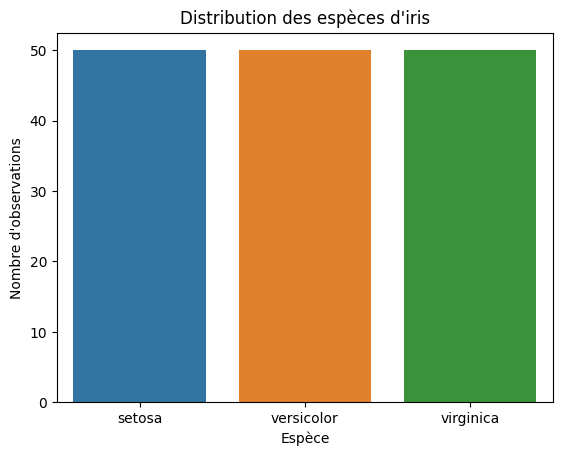
##Exercice 78: Diagramme en boîte de la longueur des pétales pour chaque espèce
Consigne : Créez un diagramme en boîte montrant la distribution de la longueur des pétales pour chaque espèce d'iris.
sns.boxplot(x="species", y="petal_length", data=iris)
plt.title("Longueur des pétales par espèce")
plt.xlabel("Espèce")
plt.ylabel("Longueur des pétales (cm)")
plt.show()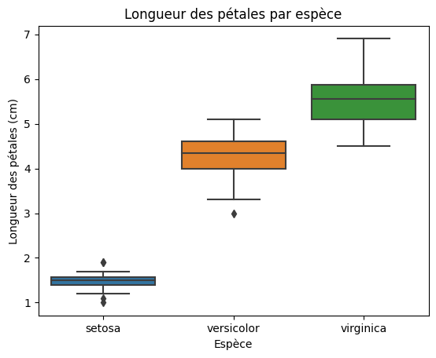
##Exercice 79: Pairplot pour explorer les relations entre les variables
Consigne : Utilisez un pairplot pour visualiser les relations entre les variables (longueur et largeur des pétales et sépales) en fonction des espèces.
sns.pairplot(iris, hue="species")
plt.title("Pairplot des caractéristiques d'iris par espèce")
plt.show()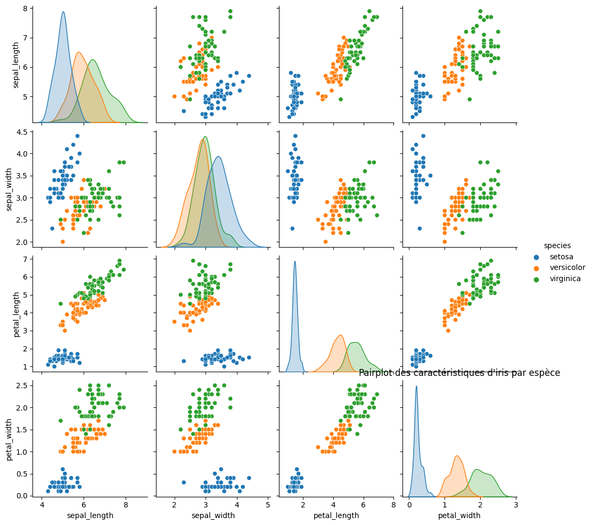
##Exercice 80: Histogramme de la longueur des sépales
Consigne : Créez un histogramme pour explorer la distribution de la longueur des sépales.
sns.histplot(iris["sepal_length"], kde=True)
plt.title("Histogramme de la longueur des sépales")
plt.xlabel("Longueur des sépales (cm)")
plt.ylabel("Fréquence")
plt.show()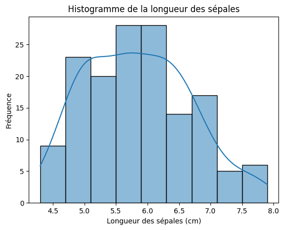
##Exercice 81: Nuage de points pour la relation entre la longueur et la largeur des sépales
Consigne : Créez un nuage de points pour explorer la relation entre la longueur et la largeur des sépales.
sns.scatterplot(x="sepal_length", y="sepal_width", data=iris)
plt.title("Nuage de points entre la longueur et la largeur des sépales")
plt.xlabel("Longueur des sépales (cm)")
plt.ylabel("Largeur des sépales (cm)")
plt.show()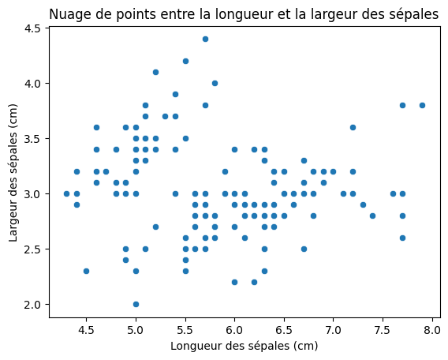
##Exercice 82: Heatmap de la corrélation entre les caractéristiques
Consigne : Créez une heatmap pour visualiser la corrélation entre les caractéristiques (variables) du dataset Iris.
correlation_matrix = iris.corr()
sns.heatmap(correlation_matrix, annot=True, cmap="coolwarm")
plt.title("Heatmap de la corrélation entre les caractéristiques d'iris")
plt.show()<ipython-input-39-0cfc8e27176d>:1: FutureWarning: The default value of numeric_only in DataFrame.corr is deprecated. In a future version, it will default to False. Select only valid columns or specify the value of numeric_only to silence this warning.
correlation_matrix = iris.corr()
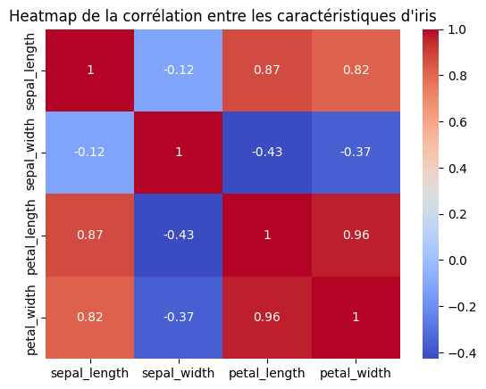
##Exercice 83: Diagramme en violon de la largeur des pétales par espèce
Consigne : Créez un diagramme en violon pour visualiser la distribution de la largeur des pétales par espèce.
sns.violinplot(x="species", y="petal_width", data=iris)
plt.title("Distribution de la largeur des pétales par espèce")
plt.xlabel("Espèce")
plt.ylabel("Largeur des pétales (cm)")
plt.show()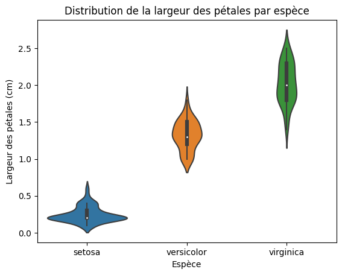
##Exercice 84: Jointplot pour explorer la relation entre la longueur des sépales et des pétales
Consigne : Utilisez un jointplot pour explorer la relation entre la longueur des sépales et des pétales.
sns.jointplot(x="sepal_length", y="petal_length", data=iris, kind="scatter")
plt.title("Relation entre la longueur des sépales et des pétales")
plt.xlabel("Longueur des sépales (cm)")
plt.ylabel("Longueur des pétales (cm)")
plt.show()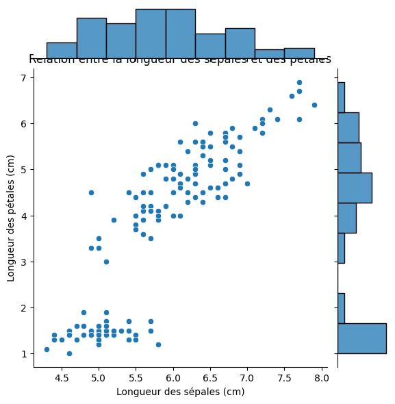
##Exercice 85: Pairgrid pour personnaliser davantage un pairplot
Consigne : Utilisez PairGrid pour personnaliser davantage un pairplot en fonction des espèces.
g = sns.PairGrid(iris, hue="species")
g.map_diag(sns.histplot)
g.map_offdiag(sns.scatterplot)
g.add_legend()
plt.suptitle("PairGrid personnalisé des caractéristiques d'iris par espèce")
plt.show()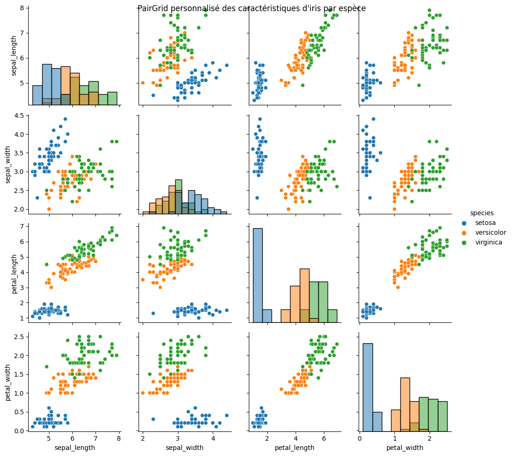
##Exercice 86 Consigne : Génére un histogramme avec pyplot sans seaborn avec le code si dessous qui va créer de maniére aléatoire un dataframe
import numpy as np
np.random.seed(42)
data = pd.DataFrame({'valeurs': np.random.randn(1000)})import numpy as np
np.random.seed(42)
data = pd.DataFrame({'valeurs': np.random.randn(1000)})import matplotlib.pyplot as plt
import pandas as pd
plt.hist(data['valeurs'], bins=20, edgecolor='black')
plt.title("Histogramme des valeurs aléatoires")
plt.xlabel("Valeurs")
plt.ylabel("Fréquence")
plt.show()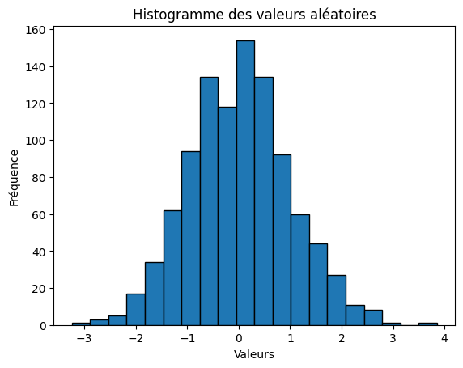
##Excercice 87 : Consigne : Fait un histogramme avec plotly express
import plotly.express as px
fig = px.histogram(data, nbins=20, title="Histogramme de données aléatoires")
fig.update_xaxes(title_text="Valeurs")
fig.update_yaxes(title_text="Fréquence")
fig.show()##Excercice 88 : Consigne : Fait un histogramme avec Bokeh
from bokeh.plotting import figure, show
from bokeh.io import output_notebook
from bokeh.layouts import column
from bokeh.models import NumeralTickFormatter
from bokeh.palettes import Viridis256
output_notebook()
hist, edges = np.histogram(data, bins=20)
p = figure(title="Histogramme de données aléatoires", x_axis_label="Valeurs", y_axis_label="Fréquence")
p.quad(top=hist, bottom=0, left=edges[:-1], right=edges[1:], fill_color=Viridis256[50], line_color="white")
p.yaxis.formatter = NumeralTickFormatter(format="0")
show(column(p))""""##Exercice 89 : Consigne : Générez un DataFrame aléatoire avec des catégories et des valeurs, puis créez un graphique en secteurs (pie chart) pour visualiser la distribution des catégories.
import pandas as pd
import numpy as np
import plotly.express as px
np.random.seed(42)
data = pd.DataFrame({
'Catégorie': ['A', 'B', 'C', 'D'],
'Valeurs': np.random.randint(1, 11, size=4)
})
fig = px.pie(data, names='Catégorie', values='Valeurs', title='Graphique en secteurs (Pie Chart) aléatoire')
fig.show()##Exercice 90 : Consigne : Générez un DataFrame aléatoire contenant des données pour trois axes (X, Y et Z) et créez un graphique en nuage de points (scatter plot) en 3D pour visualiser ces données en trois dimensions.
import pandas as pd
import numpy as np
import plotly.graph_objs as go
np.random.seed(42)
data = pd.DataFrame({
'X': np.random.rand(100),
'Y': np.random.rand(100),
'Z': np.random.rand(100)
})
fig = go.Figure(data=[go.Scatter3d(
x=data['X'],
y=data['Y'],
z=data['Z'],
mode='markers',
marker=dict(
size=12,
color=data['Z'],
colorscale='Viridis',
opacity=0.8
)
)])
fig.update_layout(scene=dict(
xaxis_title='Axe X',
yaxis_title='Axe Y',
zaxis_title='Axe Z'
), title='Graphique en nuage de points (Scatter Plot) en 3D aléatoire')
fig.show()##Exercice 91 : Création d'une classe simple
Consigne : Créez une classe nommée "Personne" avec une méthode "presentation" qui affiche "Je suis une personne".
class Personne:
def presentation(self):
print("Je suis une personne")
personne = Personne()
personne.presentation()Je suis une personne
##Exercice 92 : Ajout d'attributs à une classe
Consigne : Étendez la classe "Personne" pour inclure un attribut "nom" et une méthode "afficher_nom" qui affiche le nom de la personne.
class Personne:
def __init__(self, nom):
self.nom = nom
def afficher_nom(self):
print(f"Je suis {self.nom}")
personne = Personne("Alice")
personne.afficher_nom()Je suis Alice
##Exercice 93 : Héritage de classe
Consigne : Créez une classe "Etudiant" qui hérite de la classe "Personne". Ajoutez un attribut "niveau" à la classe "Etudiant" et une méthode "presentation" qui affiche "Je suis un étudiant de niveau X".
class Etudiant(Personne):
def __init__(self, nom, niveau):
super().__init__(nom)
self.niveau = niveau
def presentation(self):
print(f"Je suis un étudiant de niveau {self.niveau}")
etudiant = Etudiant("Bob", "L3")
etudiant.presentation()Je suis un étudiant de niveau L3
##Exercice 94 : Méthode statique
Consigne : Créez une classe "Calcul" avec une méthode statique "ajouter" qui prend deux nombres en entrée et renvoie leur somme.
class Calcul:
@staticmethod
def ajouter(a, b):
return a + b
resultat = Calcul.ajouter(5, 3)
print(resultat)8
##Exercice 95 : Méthode de classe
Consigne : Créez une classe "Rectangle" avec une méthode de classe "creer_carre" qui crée un objet de type rectangle, mais avec des côtés égaux pour former un carré.
class Rectangle:
def __init__(self, longueur, largeur):
self.longueur = longueur
self.largeur = largeur
@classmethod
def creer_carre(cls, cote):
return cls(cote, cote)
carre = Rectangle.creer_carre(4)
print(f"Carré : Longueur = {carre.longueur}, Largeur = {carre.largeur}")Carré : Longueur = 4, Largeur = 4
##Exercice 96 : Encapsulation
Consigne : Créez une classe "CompteBancaire" avec des méthodes pour déposer de l'argent, retirer de l'argent et afficher le solde.
class CompteBancaire:
def __init__(self):
self.solde = 0
def deposer(self, montant):
self.solde += montant
def retirer(self, montant):
if self.solde >= montant:
self.solde -= montant
else:
print("Solde insuffisant")
def afficher_solde(self):
print(f"Solde actuel : {self.solde}")
compte = CompteBancaire()
compte.deposer(1000)
compte.retirer(500)
compte.afficher_solde()Solde actuel : 500
E##xercice 97 : Utilisation de la méthode spéciale str
Consigne : Modifiez la classe "Personne" pour utiliser la méthode spéciale str afin de personnaliser la représentation de l'objet lorsqu'il est converti en chaîne de caractères.
class Personne:
def __init__(self, nom):
self.nom = nom
def __str__(self):
return f"Je suis {self.nom}"
personne = Personne("Alice")
print(personne)Je suis Alice
##Exercice 98 : Utilisation de la méthode spéciale add
Consigne : Créez une classe "Nombre" avec un attribut "valeur" et implémentez la méthode spéciale add pour permettre l'addition de deux objets "Nombre".
class Nombre:
def __init__(self, valeur):
self.valeur = valeur
def __add__(self, autre_nombre):
nouvelle_valeur = self.valeur + autre_nombre.valeur
return Nombre(nouvelle_valeur)
nombre1 = Nombre(5)
nombre2 = Nombre(3)
resultat = nombre1 + nombre2
print(resultat.valeur)8
##Exercice 99 : Utilisation de la méthode spéciale len
Consigne : Créez une classe "ListePersonnes" qui contient une liste de noms de personnes. Implémentez la méthode spéciale len pour renvoyer la longueur de la liste.
class ListePersonnes:
def __init__(self):
self.personnes = []
def ajouter_personne(self, nom):
self.personnes.append(nom)
def __len__(self):
return len(self.personnes)
liste = ListePersonnes()
liste.ajouter_personne("Alice")
liste.ajouter_personne("Bob")
print(len(liste))2
##Exercice 100 : Utilisation de la méthode spéciale iter
Consigne : Créez une classe "RangePersonnes" qui prend un nombre et génère des noms de personnes en utilisant la méthode spéciale iter. Par exemple, si le nombre est 3, la classe doit générer "Personne 1", "Personne 2" et "Personne 3".
class RangePersonnes:
def __init__(self, nombre):
self.nombre = nombre
def __iter__(self):
self.compteur = 1
return self
def __next__(self):
if self.compteur <= self.nombre:
nom = f"Personne {self.compteur}"
self.compteur += 1
return nom
else:
raise StopIteration
range_personnes = RangePersonnes(3)
for nom in range_personnes:
print(nom)Personne 1
Personne 2
Personne 3
Objectif: Utilisez la régression linéaire pour prédire la note moyenne des films en fonction des scores de personnalité des utilisateurs.
data = pd.read_csv("https://raw.githubusercontent.com/MainakRepositor/Datasets/master/2018-personality-data.csv")
import pandas as pd
from sklearn.linear_model import LinearRegression
from sklearn.model_selection import train_test_split
from sklearn.metrics import mean_squared_error
data = pd.read_csv("https://raw.githubusercontent.com/MainakRepositor/Datasets/master/2018-personality-data.csv")
#print(data.columns) Débug pour le nom des colonnes
features = [' openness', ' agreeableness', ' emotional_stability', ' conscientiousness', ' extraversion']
target = ' enjoy_watching '
X_train, X_test, y_train, y_test = train_test_split(data[features], data[target], test_size=0.2, random_state=42)
model = LinearRegression()
model.fit(X_train, y_train)
y_pred = model.predict(X_test)
mse = mean_squared_error(y_test, y_pred)
print("Mean Squared Error:", mse)Mean Squared Error: 1.2416701664142153
Consigne : Utilisez le dataset Iris de Scikit-Learn pour effectuer une opération de clustering afin de regrouper les données en trois clusters distincts en fonction de leurs caractéristiques (longueur du sépale, largeur du sépale, longueur du pétale, largeur du pétale). Ensuite, créez un graphique pour visualiser ces clusters.
import matplotlib.pyplot as plt
from sklearn import datasets
from sklearn.cluster import KMeans
iris = datasets.load_iris()
X = iris.data
kmeans = KMeans(n_clusters=3, random_state=42)
kmeans.fit(X)
labels = kmeans.labels_
centers = kmeans.cluster_centers_
plt.figure(figsize=(10, 6))
plt.scatter(X[:, 0], X[:, 2], c=labels, cmap='viridis', s=50, label='Échantillons')
plt.scatter(centers[:, 0], centers[:, 2], c='red', marker='x', s=200, label='Centres de cluster')
plt.xlabel('Longueur du Sépale')
plt.ylabel('Longueur du Pétale')
plt.title('Clustering des Iris en 3 Clusters')
plt.legend()
plt.show()/usr/local/lib/python3.10/dist-packages/sklearn/cluster/_kmeans.py:870: FutureWarning:
The default value of `n_init` will change from 10 to 'auto' in 1.4. Set the value of `n_init` explicitly to suppress the warning
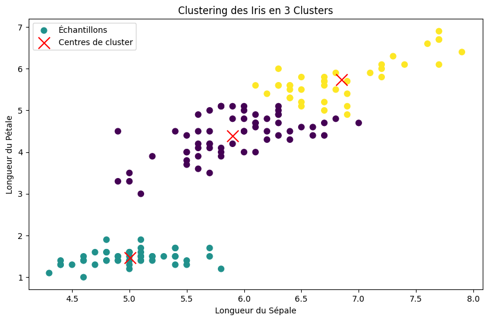
###Exercice 103 : Consigne : Utilisez le dataset Iris de Scikit-Learn pour entraîner un modèle de classification (par exemple, SVM) pour prédire l'étiquette d'un iris en fonction de ses caractéristiques. Après avoir entraîné le modèle, utilisez-le pour prédire l'étiquette d'un iris inconnu.
import numpy as np
from sklearn import datasets
from sklearn.model_selection import train_test_split
from sklearn.svm import SVC
iris = datasets.load_iris()
X = iris.data
y = iris.target
X_train, X_test, y_train, y_test = train_test_split(X, y, test_size=0.3, random_state=42)
svm_classifier = SVC(kernel='linear', C=1.0, random_state=42)
svm_classifier.fit(X_train, y_train)
nouvel_iris = np.array([[5.1, 3.5, 1.4, 0.2]])
prediction = svm_classifier.predict(nouvel_iris)
classes = iris.target_names
etiquette_prediction = classes[prediction][0]
print(f"L'iris est prédit comme étant de l'espèce : {etiquette_prediction}")L'iris est prédit comme étant de l'espèce : setosa
##Exercice 104 : Consigne : Utilisez GridSearchCV pour rechercher les meilleurs hyperparamètres (par exemple, le noyau et la valeur de régularisation C) pour un modèle SVM en utilisant le dataset Iris. Ensuite, entraînez le modèle avec les meilleurs hyperparamètres trouvés et évaluez-le.
import numpy as np
from sklearn import datasets
from sklearn.model_selection import train_test_split
from sklearn.svm import SVC
from sklearn.model_selection import GridSearchCV
iris = datasets.load_iris()
X = iris.data
y = iris.target
X_train, X_test, y_train, y_test = train_test_split(X, y, test_size=0.3, random_state=42)
parametres = {
'kernel': ['linear', 'rbf', 'poly'],
'C': [0.1, 1, 10]
}
svm_classifier = SVC()
grid_search = GridSearchCV(svm_classifier, parametres, cv=5)
grid_search.fit(X_train, y_train)
meilleurs_parametres = grid_search.best_params_
print("Meilleurs hyperparamètres trouvés :")
print(meilleurs_parametres)
meilleur_modele = SVC(kernel=meilleurs_parametres['kernel'], C=meilleurs_parametres['C'])
meilleur_modele.fit(X_train, y_train)
precision = meilleur_modele.score(X_test, y_test)
print(f"Précision du modèle : {precision * 100:.2f}%")Meilleurs hyperparamètres trouvés :
{'C': 1, 'kernel': 'poly'}
Précision du modèle : 97.78%
##Exercice 105 : A travers les 10 prochains exercices, nous allons créer le jeu du pendu
Consigne : Créez une variable contenant le mot à deviner et écrivez du code pour afficher le mot avec des underscores _ pour chaque lettre à deviner. Par exemple, si le mot est "python", l'affichage doit être "_ _ _ _ _ _".
mot_a_deviner = "python"
mot_cache = "_" * len(mot_a_deviner)
print(mot_cache)______
##Exercice 106 : Demander une lettre au joueur
Consigne : Écrivez du code pour demander au joueur de deviner une lettre. Stockez cette lettre dans une variable.
lettre_devinee = input("Devinez une lettre : ")Devinez une lettre : P
##Exercice 107 : Vérifier si la lettre est dans le mot
Consigne : Écrivez du code pour vérifier si la lettre devinée par le joueur est présente dans le mot à deviner. Si oui, mettez à jour l'affichage du mot avec la lettre correcte.
if lettre_devinee in mot_a_deviner:
indices = [i for i, lettre in enumerate(mot_a_deviner) if lettre == lettre_devinee]
for indice in indices:
mot_cache = mot_cache[:indice] + lettre_devinee + mot_cache[indice + 1:]
print(mot_cache)
else:
print("La lettre n'est pas dans le mot.")La lettre n'est pas dans le mot.
##Exercice 108 : Limiter les tentatives
Consigne : Limitez le nombre de tentatives du joueur (par exemple, 6 tentatives). Affichez le nombre de tentatives restantes.
tentatives_restantes = 6
while tentatives_restantes > 0:
lettre_devinee = input(f"Tentatives restantes : {tentatives_restantes}. Devinez une lettre : ")
if lettre_devinee in mot_a_deviner:
indices = [i for i, lettre in enumerate(mot_a_deviner) if lettre == lettre_devinee]
for indice in indices:
mot_cache = mot_cache[:indice] + lettre_devinee + mot_cache[indice + 1:]
print(mot_cache)
else:
print("La lettre n'est pas dans le mot.")
tentatives_restantes -= 1Tentatives restantes : 6. Devinez une lettre : A
La lettre n'est pas dans le mot.
Tentatives restantes : 5. Devinez une lettre : Y
La lettre n'est pas dans le mot.
Tentatives restantes : 4. Devinez une lettre : y
_y____
Tentatives restantes : 4. Devinez une lettre : P
La lettre n'est pas dans le mot.
Tentatives restantes : 3. Devinez une lettre : p
py____
Tentatives restantes : 3. Devinez une lettre : t
pyt___
Tentatives restantes : 3. Devinez une lettre : h
pyth__
Tentatives restantes : 3. Devinez une lettre : o
pytho_
Tentatives restantes : 3. Devinez une lettre : n
python
---------------------------------------------------------------------------
KeyboardInterrupt Traceback (most recent call last)
<ipython-input-67-3e4ed7ccf20d> in <cell line: 2>()
1 tentatives_restantes = 6
2 while tentatives_restantes > 0:
----> 3 lettre_devinee = input(f"Tentatives restantes : {tentatives_restantes}. Devinez une lettre : ")
4 if lettre_devinee in mot_a_deviner:
5 indices = [i for i, lettre in enumerate(mot_a_deviner) if lettre == lettre_devinee]
/usr/local/lib/python3.10/dist-packages/ipykernel/kernelbase.py in raw_input(self, prompt)
849 "raw_input was called, but this frontend does not support input requests."
850 )
--> 851 return self._input_request(str(prompt),
852 self._parent_ident,
853 self._parent_header,
/usr/local/lib/python3.10/dist-packages/ipykernel/kernelbase.py in _input_request(self, prompt, ident, parent, password)
893 except KeyboardInterrupt:
894 # re-raise KeyboardInterrupt, to truncate traceback
--> 895 raise KeyboardInterrupt("Interrupted by user") from None
896 except Exception as e:
897 self.log.warning("Invalid Message:", exc_info=True)
KeyboardInterrupt: Interrupted by user
##Exercice 109 : Gérer la victoire
Consigne : Ajoutez une condition pour vérifier si le joueur a deviné tout le mot. Si c'est le cas, affichez un message de victoire.
if mot_cache == mot_a_deviner:
print("Bravo, vous avez gagné !")
else:
print("Désolé, vous avez épuisé toutes les tentatives. Le mot était :", mot_a_deviner)##Exercice 110 : Ajouter une liste de mots
Consigne : Créez une liste de mots à deviner. Choisissez un mot aléatoire à chaque partie.
import random
mots = ["python", "programmation", "pendu", "ordinateur", "developpement"]
mot_a_deviner = random.choice(mots)##Exercice 111 : Afficher un pendu
Consigne : Créez une fonction pour afficher un dessin du pendu en fonction du nombre de tentatives restantes.
def afficher_pendu(tentatives_restantes):
pendu = [
" _________ ",
"| | ",
"| 0 ",
"| /|\\ ",
"| / \\ ",
"| ",
]
for i in range(6 - tentatives_restantes):
print(pendu[i])##Exercice 112 : Intégrer l'affichage du pendu
Consigne : Intégrez l'affichage du pendu à chaque tour. Appelez la fonction afficher_pendu pour afficher le pendu en fonction des tentatives restantes.
tentatives_restantes = 6
while tentatives_restantes > 0:
afficher_pendu(tentatives_restantes)
lettre_devinee = input(f"Tentatives restantes : {tentatives_restantes}. Devinez une lettre : ")
if lettre_devinee in mot_a_deviner:
indices = [i for i, lettre in enumerate(mot_a_deviner) if lettre == lettre_devinee]
for indice in indices:
mot_cache = mot_cache[:indice] + lettre_devinee + mot_cache[indice + 1:]
print(mot_cache)
else:
print("La lettre n'est pas dans le mot.")
tentatives_restantes -= 1##Exercice 113 : Gérer la défaite
Consigne : Si le joueur a épuisé toutes les tentatives, affichez un message de défaite avec le mot complet.
if mot_cache == mot_a_deviner:
print("Bravo, vous avez gagné !")
else:
afficher_pendu(0) # Affichez le pendu complet en cas de défaite
print("Désolé, vous avez épuisé toutes les tentatives. Le mot était :", mot_a_deviner)##Exercice 114 : Menu de répétition
Consigne : Ajoutez un menu pour permettre au joueur de rejouer ou de quitter le jeu.
mots = ["python", "programmation", "pendu", "ordinateur", "developpement"]
mot_a_deviner = random.choice(mots)
while True:
mot_cache = "_" * len(mot_a_deviner)
tentatives_restantes = 6
while tentatives_restantes > 0:
afficher_pendu(tentatives_restantes)
lettre_devinee = input(f"Tentatives restantes : {tentatives_restantes}. Devinez une lettre : ")
if lettre_devinee in mot_a_deviner:
indices = [i for i, lettre in enumerate(mot_a_deviner) if lettre == lettre_devinee]
for indice in indices:
mot_cache = mot_cache[:indice] + lettre_devinee + mot_cache[indice + 1:]
print(mot_cache)
else:
print("La lettre n'est pas dans le mot.")
tentatives_restantes -= 1
if mot_cache == mot_a_deviner:
print("Bravo, vous avez gagné !")
break
if input("Voulez-vous rejouer ? (oui/non) : ").lower() != "oui":
breakCODE COMPLET
import random
def afficher_pendu(tentatives_restantes):
pendu = [
" _________ ",
"| | ",
"| 0 ",
"| /|\\ ",
"| / \\ ",
"| ",
]
for i in range(6 - tentatives_restantes):
print(pendu[i])
mots = ["python", "programmation", "pendu", "ordinateur", "developpement"]
mot_a_deviner = random.choice(mots)
while True:
mot_cache = "_" * len(mot_a_deviner)
tentatives_restantes = 6
while tentatives_restantes > 0:
afficher_pendu(tentatives_restantes)
lettre_devinee = input(f"Tentatives restantes : {tentatives_restantes}. Devinez une lettre : ")
if lettre_devinee in mot_a_deviner:
indices = [i for i, lettre in enumerate(mot_a_deviner) if lettre == lettre_devinee]
for indice in indices:
mot_cache = mot_cache[:indice] + lettre_devinee + mot_cache[indice + 1:]
print(mot_cache)
else:
print("La lettre n'est pas dans le mot.")
tentatives_restantes -= 1
if mot_cache == mot_a_deviner:
print("Bravo, vous avez gagné !")
break
if input("Voulez-vous rejouer ? (oui/non) : ").lower() != "oui":
breakTentatives restantes : 6. Devinez une lettre : p
La lettre n'est pas dans le mot.
_________
Tentatives restantes : 5. Devinez une lettre : o
o_________
_________
Tentatives restantes : 5. Devinez une lettre : r
or_______r
_________
Tentatives restantes : 5. Devinez une lettre : di
or_______r
_________
Tentatives restantes : 5. Devinez une lettre : d
ord______r
_________
Tentatives restantes : 5. Devinez une lettre : f
La lettre n'est pas dans le mot.
_________
| |
Tentatives restantes : 4. Devinez une lettre : g
La lettre n'est pas dans le mot.
_________
| |
| 0
Tentatives restantes : 3. Devinez une lettre : e
ord____e_r
_________
| |
| 0
Tentatives restantes : 3. Devinez une lettre : m
La lettre n'est pas dans le mot.
_________
| |
| 0
| /|\
Tentatives restantes : 2. Devinez une lettre : i
ordi___e_r
_________
| |
| 0
| /|\
Tentatives restantes : 2. Devinez une lettre : g
La lettre n'est pas dans le mot.
_________
| |
| 0
| /|\
| / \
Tentatives restantes : 1. Devinez une lettre : z
La lettre n'est pas dans le mot.
Voulez-vous rejouer ? (oui/non) : oui
Tentatives restantes : 6. Devinez une lettre : i
___i______
Tentatives restantes : 6. Devinez une lettre : p
La lettre n'est pas dans le mot.
_________
Tentatives restantes : 5. Devinez une lettre : o
o__i______
_________
Tentatives restantes : 5. Devinez une lettre : r
or_i_____r
_________
Tentatives restantes : 5. Devinez une lettre : d
ordi_____r
_________
Tentatives restantes : 5. Devinez une lettre : n
ordin____r
_________
Tentatives restantes : 5. Devinez une lettre : a
ordina___r
_________
Tentatives restantes : 5. Devinez une lettre : t
ordinat__r
_________
Tentatives restantes : 5. Devinez une lettre : e
ordinate_r
_________
Tentatives restantes : 5. Devinez une lettre : u
ordinateur
Bravo, vous avez gagné !
---------------------------------------------------------------------------
KeyboardInterrupt Traceback (most recent call last)
<ipython-input-69-a2af4c0824af> in <cell line: 16>()
35 break
36
---> 37 if input("Voulez-vous rejouer ? (oui/non) : ").lower() != "oui":
38 break
/usr/local/lib/python3.10/dist-packages/ipykernel/kernelbase.py in raw_input(self, prompt)
849 "raw_input was called, but this frontend does not support input requests."
850 )
--> 851 return self._input_request(str(prompt),
852 self._parent_ident,
853 self._parent_header,
/usr/local/lib/python3.10/dist-packages/ipykernel/kernelbase.py in _input_request(self, prompt, ident, parent, password)
893 except KeyboardInterrupt:
894 # re-raise KeyboardInterrupt, to truncate traceback
--> 895 raise KeyboardInterrupt("Interrupted by user") from None
896 except Exception as e:
897 self.log.warning("Invalid Message:", exc_info=True)
KeyboardInterrupt: Interrupted by user
##Exercice 115 : Consigne : Créez une base de données SQLite3 appelée "entreprise.db". Ensuite, créez deux tables : "employes" avec les colonnes "id" (clé primaire), "nom", "poste" et "departement", et "departements" avec les colonnes "id" (clé primaire) et "nom". Établissez une relation entre les deux tables en utilisant la colonne "departement" de la table "employes" comme clé étrangère faisant référence à la colonne "id" de la table "departements". Tout ca au travers d'une fonction.
import sqlite3
def creationDB():
conn = sqlite3.connect('entreprise.db')
cursor = conn.cursor()
cursor.execute('''CREATE TABLE IF NOT EXISTS departements (
id INTEGER PRIMARY KEY,
nom TEXT
)''')
cursor.execute('''CREATE TABLE IF NOT EXISTS employes (
id INTEGER PRIMARY KEY,
nom TEXT,
poste TEXT,
departement INTEGER,
FOREIGN KEY (departement) REFERENCES departements(id)
)''')
conn.commit()
conn.close()##Exercice 116 : Consigne : Ajoutez au moins trois enregistrements d'employés (Alice, Bob, Charlie) à la table "employes" (Manager, Analyste, Assistant) et deux enregistrements de départements à la table "departements".
def addBD():
conn = sqlite3.connect('entreprise.db')
cursor = conn.cursor()
cursor.execute("INSERT INTO departements (nom) VALUES ('Ressources Humaines')")
cursor.execute("INSERT INTO departements (nom) VALUES ('Finance')")
cursor.execute("INSERT INTO employes (nom, poste, departement) VALUES ('Alice', 'Manager', 1)")
cursor.execute("INSERT INTO employes (nom, poste, departement) VALUES ('Bob', 'Analyste', 2)")
cursor.execute("INSERT INTO employes (nom, poste, departement) VALUES ('Charlie', 'Assistant', 1)")
conn.commit()
conn.close()##Exercice 117 : Consigne : Modifiez le poste de l'employé "Alice" pour le changer en "Directeur".
def UPDATE():
conn = sqlite3.connect('entreprise.db')
cursor = conn.cursor()
cursor.execute("UPDATE employes SET poste = 'Directeur' WHERE nom = 'Alice'")
conn.commit()
conn.close()##Exercice 118 : Suppression d'une donnée dans la table "employes"
Consigne : Supprimez l'employé "Bob" de la table "employes".
def delete():
conn = sqlite3.connect('entreprise.db')
cursor = conn.cursor()
cursor.execute("DELETE FROM employes WHERE nom = 'Bob'")
conn.commit()
conn.close()##Exercice 119 : Affichage des données de la table "employes"
Consigne : Affichez toutes les données de la table "employes" incluant le nom de l'employé, son poste et le nom de son département.
def view_db():
conn = sqlite3.connect('entreprise.db')
cursor = conn.cursor()
cursor.execute('''SELECT e.nom AS nom_employe, e.poste, d.nom AS nom_departement
FROM employes AS e
JOIN departements AS d ON e.departement = d.id''')
rows = cursor.fetchall()
for row in rows:
print(f"Nom de l'employé: {row[0]}, Poste: {row[1]}, Département: {row[2]}")
conn.close()##Exercice 120 : Consigne : Vous avez un fichier JSON appelé "commandes.json" contenant des informations sur les commandes et les produits. La structure du fichier est la suivante (enregistrer le : commandes.json ) pour l'exploiter dans les exercices ou utiliser la variable donnees :
donnees = {
"commandes": [
{
"numero_commande": 101,
"client": "Alice",
"produits": [
{
"nom": "Laptop",
"quantite": 2
},
{
"nom": "Souris",
"quantite": 5
}
]
},
{
"numero_commande": 102,
"client": "Bob",
"produits": [
{
"nom": "Téléphone",
"quantite": 3
},
{
"nom": "Clavier",
"quantite": 1
}
]
}
]
}Recherchez le client qui a passé une commande contenant un produit appelé "Laptop". Affichez le nom du client et le numéro de commande correspondant.
import json
#with open("commandes.json", "r") as file:
# donnees = json.load(file)
for commande in donnees["commandes"]:
for produit in commande["produits"]:
if produit["nom"] == "Laptop":
print(f"Client : {commande['client']}, Numéro de commande : {commande['numero_commande']}")
breakClient : Alice, Numéro de commande : 101
##Exercice 121 : transformez-le en un DataFrame
data = []
for commande in donnees["commandes"]:
for produit in commande["produits"]:
data.append({
"numero_commande": commande["numero_commande"],
"client": commande["client"],
"nom_produit": produit["nom"],
"quantite": produit["quantite"]
})
df = pd.DataFrame(data)
df| numero_commande | client | nom_produit | quantite | |
|---|---|---|---|---|
| 0 | 101 | Alice | Laptop | 2 |
| 1 | 101 | Alice | Souris | 5 |
| 2 | 102 | Bob | Téléphone | 3 |
| 3 | 102 | Bob | Clavier | 1 |
##Exercice 122 - 130 : Création d'une Mini-Application Streamlit avec le Dataset Iris
Consigne : Vous allez créer une mini-application Streamlit qui permettra aux utilisateurs d'explorer le célèbre dataset Iris. La mini-application devra afficher les caractéristiques des fleurs (longueur et largeur des pétales et des sépales) en fonction de l'espèce de la fleur (Setosa, Versicolor ou Virginica).
import streamlit as stimport streamlit as st
import pandas as pd
import seaborn as sns
import matplotlib.pyplot as plt
from sklearn import datasets
iris = datasets.load_iris()
data = pd.DataFrame(iris.data, columns=iris.feature_names)
data["species"] = iris.target_names[iris.target]
st.title("Exploration du Dataset Iris")
caracteristique = st.selectbox("Sélectionnez la caractéristique à explorer :", data.columns[:-1])
plt.figure(figsize=(8, 6))
sns.boxplot(x="species", y=caracteristique, data=data)
plt.xlabel("Espèce de Fleur")
plt.ylabel(f"{caracteristique} (cm)")
plt.title(f"Distribution de {caracteristique} par Espèce de Fleur")
st.pyplot(plt)
st.write("Informations complémentaires sur le dataset Iris :")
st.write(data.describe())##Exercice 131 : ** Pandas Profiling / ydata**
pip install ydata-profilingExplore les données rapidement
data = pd.read_csv("https://raw.githubusercontent.com/MainakRepositor/Datasets/master/2018-personality-data.csv")import pandas as pd
data = pd.read_csv("https://raw.githubusercontent.com/MainakRepositor/Datasets/master/2018-personality-data.csv")
from ydata_profiling import ProfileReport
ProfileReport(data, title="Profiling Report"){"model_id":"017dcb36b3474b07b92c31d21d3da861","version_major":2,"version_minor":0}{"model_id":"e9a69178e366454ead5b3a442d2d809b","version_major":2,"version_minor":0}{"model_id":"08d6966586bf4572ae70e9ef3e314688","version_major":2,"version_minor":0}##Exercice 132 : Le Jeu des Trois Portes (Monty Hall)
Consigne :
Le jeu des trois portes, également connu sous le nom de "Problème de Monty Hall", est un casse-tête probabiliste célèbre. Voici les règles du jeu :
Vous êtes présentateur d'une émission de télévision, et il y a trois portes devant vous. Derrière l'une d'elles se trouve une voiture, et derrière les deux autres se trouvent des chèvres. Le candidat (le joueur) choisit une des trois portes sans savoir ce qui se trouve derrière. Une fois que le candidat a fait son choix, vous, en tant que présentateur, ouvrez une des deux portes restantes pour révéler une chèvre (vous savez où se trouve la voiture). À ce stade, le candidat a deux options : il peut choisir de rester avec sa porte d'origine ou changer et sélectionner l'autre porte non ouverte. La question est : quelle est la meilleure stratégie pour le candidat s'il veut maximiser ses chances de gagner la voiture ?
import random
import matplotlib.pyplot as plt
def jeu_des_trois_portes():
portes = [0, 0, 1]
random.shuffle(portes)
choix_candidat = random.randint(0, 2)
for i in range(3):
if i != choix_candidat and portes[i] == 0:
porte_ouverte = i
break
choix_initial = portes[choix_candidat]
nouveau_choix = 3 - choix_candidat - porte_ouverte
return choix_initial, portes[nouveau_choix]
nombre_simulations = 10000
victoires_changer_porte = 0
victoires_garder_porte = 0
for _ in range(nombre_simulations):
choix_initial, resultat_changement = jeu_des_trois_portes()
if choix_initial == 1:
victoires_garder_porte += 1
if resultat_changement == 1:
victoires_changer_porte += 1
probabilite_garder_porte = victoires_garder_porte / nombre_simulations
probabilite_changer_porte = victoires_changer_porte / nombre_simulations
print("Probabilité de gagner en gardant la porte d'origine :", probabilite_garder_porte)
print("Probabilité de gagner en changeant de porte :", probabilite_changer_porte)
strategies = ['Garder la porte', 'Changer de porte']
probabilites = [probabilite_garder_porte, probabilite_changer_porte]
plt.bar(strategies, probabilites, color=['blue', 'green'])
plt.xlabel('Stratégie')
plt.ylabel('Probabilité de gagner')
plt.title('Comparaison des stratégies dans le jeu des trois portes')
plt.ylim(0, 1)
plt.show()Probabilité de gagner en gardant la porte d'origine : 0.3347
Probabilité de gagner en changeant de porte : 0.6653
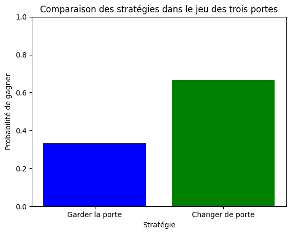
##Exercice 133 : Simulation de lancer de dés
Consigne :
Vous allez créer un programme Python qui simule le lancer de deux dés à six faces (d6) et calcule la somme des valeurs obtenues sur les deux dés. Vous devrez effectuer ces étapes :
Simulez le lancer de deux dés à six faces (d6) en utilisant des nombres aléatoires. Vous pouvez utiliser la fonction random.randint() de la bibliothèque random pour simuler le lancer de chaque dé. Calculez la somme des deux valeurs obtenues. Répétez ces étapes un grand nombre de fois (par exemple, 10 000 simulations) pour obtenir une distribution des sommes possibles. Créez un graphique (histogramme) pour illustrer la distribution des sommes obtenues.
import random
import matplotlib.pyplot as plt
def lancer_de():
return random.randint(1, 6)
nombre_simulations = 10000
resultats = []
for _ in range(nombre_simulations):
de1 = lancer_de()
de2 = lancer_de()
somme_des = de1 + de2
resultats.append(somme_des)
plt.hist(resultats, bins=range(2, 14), edgecolor='black', alpha=0.7)
plt.xlabel('Somme des dés')
plt.ylabel('Fréquence')
plt.title('Distribution des sommes obtenues en lançant deux dés à six faces')
plt.xticks(range(2, 13))
plt.grid(axis='y', linestyle='--', alpha=0.7)
plt.show()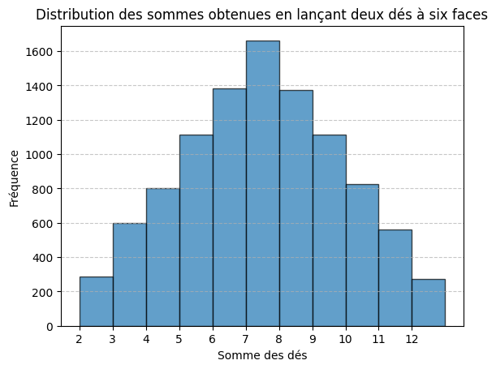
##Exercice 134 : Simulation de la marche aléatoire
Consigne :
Vous allez créer un programme Python qui simule une marche aléatoire unidimensionnelle. Une marche aléatoire consiste à effectuer une série de pas aléatoires dans une direction (à gauche ou à droite) à partir d'une position de départ. Les règles sont les suivantes :
Vous commencez à une position de départ, disons 0. À chaque étape, vous faites un pas aléatoire d'une unité vers la gauche (négatif) ou la droite (positif) avec une probabilité de 50 % pour chaque direction. Répétez ces étapes un certain nombre de fois pour simuler la marche aléatoire. Enregistrez les positions à chaque étape. Tracez un graphique de la position en fonction du temps pour visualiser la marche aléatoire.
import random
import matplotlib.pyplot as plt
def etape_marche():
return random.choice([-1, 1])
nombre_etapes = 100
positions = [0]
for _ in range(nombre_etapes):
deplacement = etape_marche()
nouvelle_position = positions[-1] + deplacement
positions.append(nouvelle_position)
plt.plot(range(nombre_etapes + 1), positions)
plt.xlabel('Temps (étapes)')
plt.ylabel('Position')
plt.title('Simulation de la marche aléatoire')
plt.grid(True)
plt.show()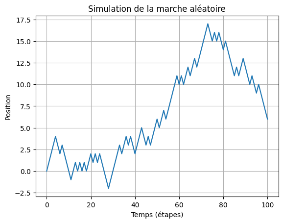
##Exercice 135 : Calcul de la distance entre deux coordonnées GPS
Consigne : Écrivez une fonction Python qui prend en entrée les coordonnées GPS (latitude et longitude) de deux points et calcule la distance entre ces deux points en kilomètres en utilisant la formule de la sphère.
import math
def distance_haversine(lat1, lon1, lat2, lon2):
rayon_terre = 6371.0
lat1 = math.radians(lat1)
lon1 = math.radians(lon1)
lat2 = math.radians(lat2)
lon2 = math.radians(lon2)
dlon = lon2 - lon1
dlat = lat2 - lat1
# Formule de la distance haversine
a = math.sin(dlat / 2)**2 + math.cos(lat1) * math.cos(lat2) * math.sin(dlon / 2)**2
c = 2 * math.atan2(math.sqrt(a), math.sqrt(1 - a))
distance = rayon_terre * c
return distance
lat1, lon1 = 52.5200, 13.4050 # Berlin, Allemagne
lat2, lon2 = 48.8566, 2.3522 # Paris, France
distance_km = distance_haversine(lat1, lon1, lat2, lon2)
print("Distance entre Berlin et Paris :", round(distance_km), "kilomètres")Distance entre Berlin et Paris : 877 kilomètres
##Exercice 136 : Génération de coordonnées GPS aléatoires
Créez un générateur de coordonnées GPS aléatoires dans une région spécifique. Vous pouvez définir une zone géographique et générer des coordonnées aléatoires à l'intérieur de cette zone.
import random
def generer_coordonnees_gps(region):
min_lat, max_lat, min_lon, max_lon = region
latitude = random.uniform(min_lat, max_lat)
longitude = random.uniform(min_lon, max_lon)
return round(latitude,1), round(longitude,1)
region_paris = (48.8, 49.1, 2.2, 2.6) # (latitude_min, latitude_max, longitude_min, longitude_max)
coord_gps = generer_coordonnees_gps(region_paris)
print("Coordonnées GPS aléatoires dans la région de Paris :", coord_gps)Coordonnées GPS aléatoires dans la région de Paris : (48.9, 2.4)
##Exercice 137 : Calcul de la distance totale d'un itinéraire
Écrivez une fonction qui prend une liste de coordonnées GPS représentant un itinéraire et calcule la distance totale parcourue en kilomètres.
geopyfrom geopy.distance import geodesic
def calculer_distance_totale(itineraire):
distance_totale = 0.0
for i in range(len(itineraire) - 1):
coord1 = itineraire[i]
coord2 = itineraire[i + 1]
distance_partielle = geodesic(coord1, coord2).kilometers
distance_totale += distance_partielle
return distance_totale
itineraire = [(48.8566, 2.3522), (51.5074, -0.1278), (40.7128, -74.0060)] # Exemple : Paris -> Londres -> New York
distance = calculer_distance_totale(itineraire)
print("Distance totale de l'itinéraire :", distance, "kilomètres")Distance totale de l'itinéraire : 5929.156699022289 kilomètres
##Exercice 138 : Carte interactive avec des marqueurs
Utilisez une bibliothèque de cartographie comme Folium pour créer une carte interactive. Ajoutez des marqueurs à des emplacements spécifiques sur la carte et affichez des informations lorsque l'utilisateur clique sur un marqueur.
FOLIUMimport folium
ma_carte = folium.Map(location=[48.8566, 2.3522], zoom_start=6) # Paris, France
marqueur1 = folium.Marker(location=[48.8566, 2.3522], popup="Paris, France")
marqueur2 = folium.Marker(location=[51.5074, -0.1278], popup="Londres, Royaume-Uni")
marqueur3 = folium.Marker(location=[40.7128, -74.0060], popup="New York, États-Unis")
marqueur1.add_to(ma_carte)
marqueur2.add_to(ma_carte)
marqueur3.add_to(ma_carte)
ma_carte##Exercice 139 : Géocodage d'une liste d'adresses
Consigne : Écrivez une fonction Python qui prend en entrée une liste d'adresses (par exemple, des adresses postales) et utilise une API de géocodage (par exemple, Google Maps Geocoding API, ou GEOPY, et co) pour convertir ces adresses en coordonnées GPS (latitude et longitude). Affichez les coordonnées obtenues pour chaque adresse.
from geopy.geocoders import Nominatim
def geocoder_liste_adresses(adresses):
geolocator = Nominatim(user_agent="geocoder")
coordonnees = []
for adresse in adresses:
location = geolocator.geocode(adresse)
if location:
latitude = location.latitude
longitude = location.longitude
coordonnees.append((adresse, latitude, longitude))
else:
coordonnees.append((adresse, None, None))
return coordonnees
adresses = ["Tour Eiffel, Paris", "Louvre Museum, Paris", "Champs-Élysées, Paris"]
resultats = geocoder_liste_adresses(adresses)
for adresse, latitude, longitude in resultats:
if latitude is not None and longitude is not None:
print(f"Adresse : {adresse}")
print(f"Latitude : {latitude}")
print(f"Longitude : {longitude}")
print()
else:
print(f"Impossible de géocoder l'adresse : {adresse}")Adresse : Tour Eiffel, Paris
Latitude : 48.8582599
Longitude : 2.2945006358633115
Adresse : Louvre Museum, Paris
Latitude : 48.8611473
Longitude : 2.33802768704666
Adresse : Champs-Élysées, Paris
Latitude : 48.8711561
Longitude : 2.3039046
##Exercice 140 : Création d'un Module de Mathématiques
Créez un module Python appelé "math_operations.py". À l'intérieur du module, définissez les fonctions suivantes : add(a, b): Cette fonction prend deux nombres en entrée et renvoie leur somme. subtract(a, b): Cette fonction prend deux nombres en entrée et renvoie leur différence. multiply(a, b): Cette fonction prend deux nombres en entrée et renvoie leur produit. divide(a, b): Cette fonction prend deux nombres en entrée et renvoie leur quotient. En dehors du module, créez un script Python appelé "main.py" qui importe le module "math_operations" et utilise ces fonctions pour effectuer des opérations mathématiques.
# math_operations.py
def add(a, b):
return a + b
def subtract(a, b):
return a - b
def multiply(a, b):
return a * b
def divide(a, b):
if b != 0:
return a / b
else:
return "Division par zéro impossible"# main.py
import math_operations
result_add = math_operations.add(5, 3)
result_subtract = math_operations.subtract(10, 4)
result_multiply = math_operations.multiply(7, 2)
result_divide = math_operations.divide(8, 2)
print("Addition :", result_add)
print("Soustraction :", result_subtract)
print("Multiplication :", result_multiply)
print("Division :", result_divide)##Exercice 141 : Création d'un Module de Conversion de Température
Créez un module Python appelé "temperature_converter.py". À l'intérieur du module, définissez les fonctions suivantes : celsius_to_fahrenheit(celsius): Cette fonction prend une température en degrés Celsius en entrée et renvoie la température équivalente en degrés Fahrenheit. fahrenheit_to_celsius(fahrenheit): Cette fonction prend une température en degrés Fahrenheit en entrée et renvoie la température équivalente en degrés Celsius. En dehors du module, créez un script Python appelé "main.py" qui importe le module "temperature_converter" et utilise ces fonctions pour effectuer des conversions de température. Code de "temperature_converter.py" :
# temperature_converter.py
def celsius_to_fahrenheit(celsius):
return (celsius * 9/5) + 32
def fahrenheit_to_celsius(fahrenheit):
return (fahrenheit - 32) * 5/9# main.py
import temperature_converter
celsius_temp = 25
fahrenheit_temp = temperature_converter.celsius_to_fahrenheit(celsius_temp)
print(f"{celsius_temp} degrés Celsius équivalent à {fahrenheit_temp} degrés Fahrenheit")
fahrenheit_temp = 77
celsius_temp = temperature_converter.fahrenheit_to_celsius(fahrenheit_temp)
print(f"{fahrenheit_temp} degrés Fahrenheit équivalent à {celsius_temp} degrés Celsius")
##Exercice 142 : Utilisation de map
Créez une liste de nombres entiers. Utilisez la fonction map pour créer une nouvelle liste qui contient chaque nombre de la liste d'origine élevé au carré.
numbers = [1, 2, 3, 4, 5]
squared_numbers = list(map(lambda x: x**2, numbers))
print(squared_numbers)[1, 4, 9, 16, 25]
##Exercice 144 : Utilisation de filter
Créez une liste de nombres entiers. Utilisez la fonction filter pour créer une nouvelle liste qui contient uniquement les nombres pairs de la liste d'origine.
numbers = [1, 2, 3, 4, 5, 6, 7, 8, 9]
even_numbers = list(filter(lambda x: x % 2 == 0, numbers))
print(even_numbers)[2, 4, 6, 8]
##Exercice 144 : Utilisation de pd.crosstab
Utilisez la méthode pd.crosstab pour créer une table de contingence qui montre combien de ventes ont eu lieu pour chaque produit dans chaque ville.
data = {'Ville': ['New York', 'Los Angeles', 'Chicago', 'New York', 'Chicago'],
'Produit': ['A', 'B', 'A', 'C', 'B']}
df = pd.DataFrame(data)import pandas as pd
data = {'Ville': ['New York', 'Los Angeles', 'Chicago', 'New York', 'Chicago'],
'Produit': ['A', 'B', 'A', 'C', 'B']}
df = pd.DataFrame(data)
contingency_table = pd.crosstab(df['Ville'], df['Produit'])
print(contingency_table)Produit A B C
Ville
Chicago 1 1 0
Los Angeles 0 1 0
New York 1 0 1
##Exercice 145 : Utilisation de pd.get_dummies
Utilisez la méthode pd.get_dummies pour effectuer un encodage one-hot de la colonne "Espèce" et créez de nouvelles colonnes binaires pour chaque espèce.
data = {'Espèce': ['Chien', 'Chat', 'Chien', 'Oiseau', 'Chat']}
df = pd.DataFrame(data)import pandas as pd
data = {'Espèce': ['Chien', 'Chat', 'Chien', 'Oiseau', 'Chat']}
df = pd.DataFrame(data)
one_hot_encoded = pd.get_dummies(df['Espèce'], prefix='Espèce')
print(one_hot_encoded) Espèce_Chat Espèce_Chien Espèce_Oiseau
0 0 1 0
1 1 0 0
2 0 1 0
3 0 0 1
4 1 0 0
##Exercice 146 : Utilisation de pd.melt
Utilisez la méthode pd.melt pour faire pivoter le DataFrame de manière à avoir une colonne "Type" indiquant si la température est maximale ou minimale et une colonne "Température" pour les valeurs correspondantes.
data = {'Jour': ['Lundi', 'Mardi', 'Mercredi'],
'Température_Max': [28, 26, 30],
'Température_Min': [18, 16, 20]}
df = pd.DataFrame(data)import pandas as pd
data = {'Jour': ['Lundi', 'Mardi', 'Mercredi'],
'Température_Max': [28, 26, 30],
'Température_Min': [18, 16, 20]}
df = pd.DataFrame(data)
display(df)
melted = pd.melt(df, id_vars=['Jour'], value_vars=['Température_Max', 'Température_Min'], var_name='Type', value_name='Température')
melted| Jour | Température_Max | Température_Min | |
|---|---|---|---|
| 0 | Lundi | 28 | 18 |
| 1 | Mardi | 26 | 16 |
| 2 | Mercredi | 30 | 20 |
| Jour | Type | Température | |
|---|---|---|---|
| 0 | Lundi | Température_Max | 28 |
| 1 | Mardi | Température_Max | 26 |
| 2 | Mercredi | Température_Max | 30 |
| 3 | Lundi | Température_Min | 18 |
| 4 | Mardi | Température_Min | 16 |
| 5 | Mercredi | Température_Min | 20 |
##Exercice 147 : Création d'un graphique de variation mensuelle de la température
Utilisez Plotly Express pour créer un graphique interactif de variation mensuelle de la température. Divisez le graphique en colonnes, chaque colonne représentant une année différente. Assurez-vous que les mois sont correctement triés dans l'ordre chronologique. Personnalisez le graphique en ajoutant des titres, des étiquettes d'axe et des légendes appropriés.
Utilise ces données random
import numpy as np
np.random.seed(42)
cities = ['New York', 'Los Angeles', 'Chicago']
years = [str(year) for year in range(2018, 2023)]
months = ['Janvier', 'Février', 'Mars', 'Avril', 'Mai', 'Juin', 'Juillet', 'Août', 'Septembre', 'Octobre', 'Novembre', 'Décembre']
data = []
for year in years:
for city in cities:
for month in months:
temp = np.random.uniform(-10, 35)
data.append([year, city, month, temp])
df = pd.DataFrame(data, columns=['Année', 'Ville', 'Mois', 'Température'])
df['Mois'] = pd.Categorical(df['Mois'], categories=months, ordered=True)
df.sort_values(['Année', 'Mois'], ascending=[True, True], inplace=True)
import pandas as pd
import plotly.express as px
import numpy as np
np.random.seed(42)
cities = ['New York', 'Los Angeles', 'Chicago']
years = [str(year) for year in range(2018, 2023)]
months = ['Janvier', 'Février', 'Mars', 'Avril', 'Mai', 'Juin', 'Juillet', 'Août', 'Septembre', 'Octobre', 'Novembre', 'Décembre']
data = []
for year in years:
for city in cities:
for month in months:
temp = np.random.uniform(-10, 35)
data.append([year, city, month, temp])
df = pd.DataFrame(data, columns=['Année', 'Ville', 'Mois', 'Température'])
df['Mois'] = pd.Categorical(df['Mois'], categories=months, ordered=True)
df.sort_values(['Année', 'Mois'], ascending=[True, True], inplace=True)
#display(df)
fig = px.bar(df, x='Mois', y='Température', color='Ville',
facet_col='Année',
labels={'Température': 'Température (°C)'},
title='Variation mensuelle de la température par ville',
category_orders={"Mois": months})
fig.update_layout(xaxis_title='Mois',
yaxis_title='Température (°C)',
yaxis_tickformat='d',
xaxis={'categoryorder': 'array', 'categoryarray': months},
uniformtext_minsize=8,
uniformtext_mode='hide')
fig.show()
##Exercice 148: Création d'une fonction pour analyser un DataFrame
Écrivez une fonction nommée analyse_dataframe qui prend un DataFrame comme paramètre. La fonction doit lister les noms des colonnes du DataFrame et leur type de données associé. La fonction doit calculer le pourcentage de valeurs manquantes pour chaque colonne et l'afficher. Testez la fonction en utilisant un DataFrame de votre choix.
import pandas as pd
def analyse_dataframe(df):
"""
Analyse un DataFrame en listant les colonnes et leurs types de données,
et en calculant le pourcentage de valeurs manquantes par colonne.
Args:
df (pandas.DataFrame): Le DataFrame à analyser.
Returns:
None (affiche les résultats).
"""
print("Liste des colonnes et leurs types de données :")
for col_name, col_type in df.dtypes.items():
print(f"{col_name}: {col_type}")
total_rows = len(df)
print("\nPourcentage de valeurs manquantes par colonne :")
for col_name in df.columns:
missing_count = df[col_name].isna().sum()
missing_percentage = (missing_count / total_rows) * 100
print(f"{col_name}: {missing_percentage:.2f}%")##Exercice 149: Normalisation de données de température
Générez un ensemble de données de température sur une période de 30 jours avec des valeurs aléatoires. Vous pouvez utiliser numpy pour générer ces données. Créez un DataFrame à partir des données générées avec deux colonnes : "Jour" et "Température". Le DataFrame doit ressembler à ceci :
Jour Température
1 22.3
2 21.5
... ...
30 19.8Utilisez RobustScaler de Scikit-Learn pour normaliser la colonne "Température" du DataFrame. Tracez deux courbes sur un graphique : Une courbe avec la température brute avant la normalisation (colonne "Température"). Une courbe avec la température normalisée après la normalisation (colonne "Température_normalisée").
import pandas as pd
import numpy as np
import matplotlib.pyplot as plt
from sklearn.preprocessing import RobustScaler
np.random.seed(0)
jours = np.arange(1, 31)
temperature = np.random.normal(20, 5, 30)
df = pd.DataFrame({'Jour': jours, 'Température': temperature})
scaler = RobustScaler()
df['Température_normalisée'] = scaler.fit_transform(df[['Température']])
plt.figure(figsize=(12, 6))
plt.subplot(1, 2, 1)
plt.plot(df['Jour'], df['Température'], label='Température (Avant Normalisation)', color='blue')
plt.title('Température Avant Normalisation')
plt.xlabel('Jour')
plt.ylabel('Température (°C)')
plt.legend()
plt.subplot(1, 2, 2)
plt.plot(df['Jour'], df['Température_normalisée'], label='Température (Après Normalisation)', color='green')
plt.title('Température Après Normalisation')
plt.xlabel('Jour')
plt.ylabel('Température Normalisée')
plt.legend()
plt.tight_layout()
plt.show()
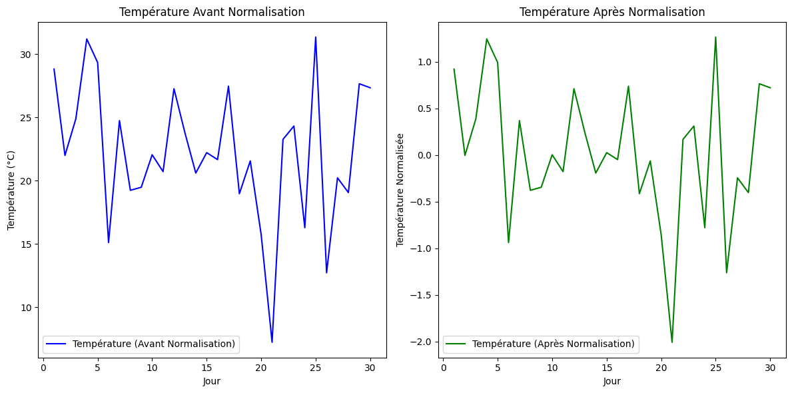
plt.figure(figsize=(10, 6))
plt.plot(df['Jour'], df['Température'], label='Température (Avant Normalisation)', color='blue')
plt.plot(df['Jour'], df['Température_normalisée'], label='Température (Après Normalisation)', color='green')
plt.title('Courbes de Température Avant et Après Normalisation')
plt.xlabel('Jour')
plt.ylabel('Température')
plt.legend()
plt.tight_layout()
plt.show()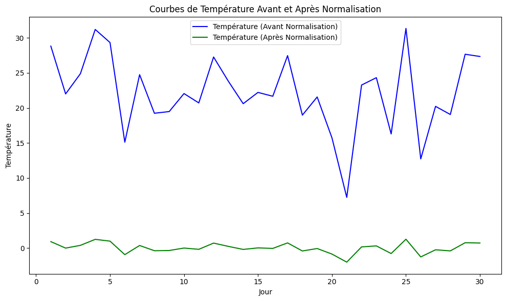
##Exercice 150 : Mesure du temps d'exécution d'un script
Vous disposez d'un script Python qui effectue une tâche spécifique, mais vous souhaitez optimiser son temps d'exécution. Votre objectif est de comparer le temps d'exécution du script avant et après l'optimisation pour évaluer l'impact de vos améliorations.
import time
def ma_fonction():
total = 0
for i in range(1, 1000000):
total += i
temps_debut = time.time()
ma_fonction()
temps_fin = time.time()
temps_execution = temps_fin - temps_debut
print(f"Temps d'exécution : {temps_execution} secondes")Temps d'exécution : 0.20224237442016602 secondes
#pour collab
%%time
def ma_fonction():
total = 0
for i in range(1, 1000000):
total += i
ma_fonction()CPU times: user 168 ms, sys: 26.1 ms, total: 194 ms
Wall time: 269 ms